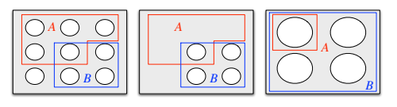
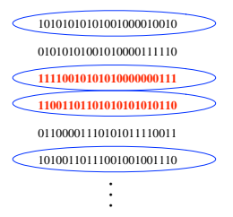
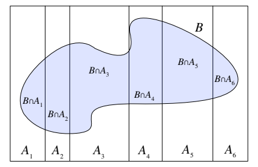
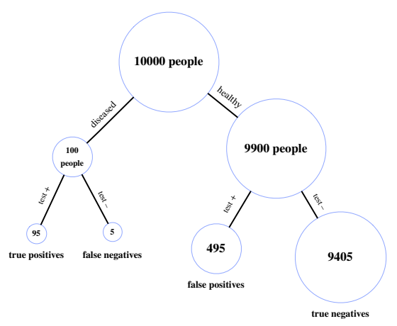
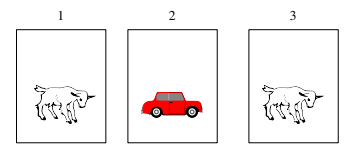
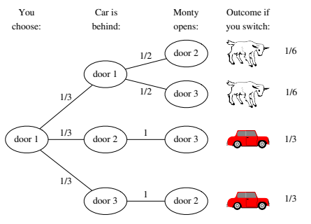
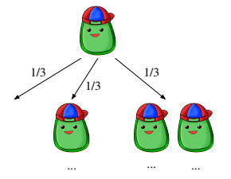
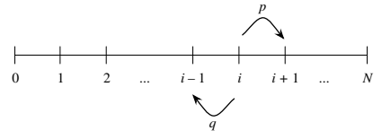
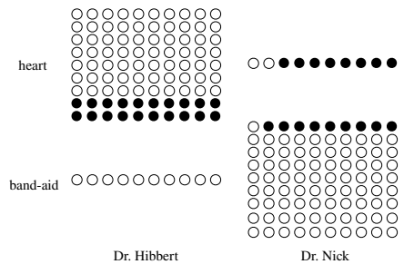
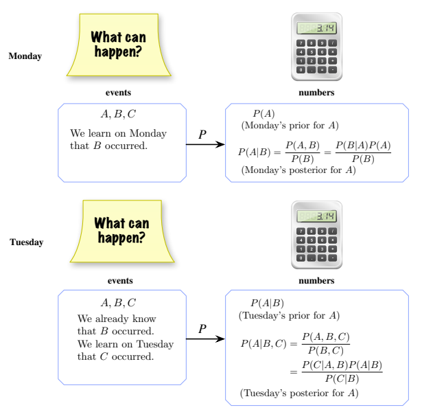

2 조건부확률
우리는 확률을 사건에 대한 믿음의 정도나 불확실성을 표현하는 언어로 소개했다. 새로운 증거를 관찰할 때마다, 즉 데이터를 얻을 때마다 우리는 불확실성에 영향을 줄 수 있는 정보를 얻게 된다. 기존 믿음과 일치하는 새로운 관찰은 그 믿음을 더 확신하게 할 수 있지만, 예상 밖의 관찰은 그 믿음에 의문을 제기하게 할 수 있다. 조건부확률은 다음과 같은 근본적인 질문을 다루는 개념이다. 관찰한 증거를 반영하여 우리의 믿음을 어떻게 갱신해야 할까?
2.1 조건부로 생각하는 것의 중요성
조건부확률은 과학, 의학, 법률에서 추론하는 데 필수적이다. 증거를 세계에 대한 이해에 논리적이고 정합적인 방식으로 반영하는 방법을 보여 주기 때문이다. 사실 모든 확률은 조건부이다라는 관점이 유용하다. 명시적으로 쓰여 있든 그렇지 않든, 모든 확률에는 언제나 배경지식이나 가정이 들어 있다.
예를 들어 어느 날 아침, 그날 비가 올 사건 \(R\)에 관심이 있다고 하자. 밖을 내다보기 전에 평가한 비가 올 확률을 \(P(R)\)이라 하자. 그다음 밖을 내다보니 하늘에 심상치 않은 구름이 보인다면, 아마 비가 올 확률을 더 높게 평가해야 할 것이다. 이 새로운 확률을 \(P(R\mid C)\)로 나타내고 “\(C\)가 주어졌을 때 \(R\)의 확률”이라고 읽는다. 여기서 \(C\)는 심상치 않은 구름이 있는 사건이다. \(P(R)\)에서 \(P(R\mid C)\)로 넘어갈 때 우리는 “\(C\)를 조건으로 삼는다”고 말한다. 하루가 지나는 동안 날씨에 관한 정보를 점점 더 많이 얻게 될 수 있으며, 그때마다 확률을 계속 갱신할 수 있다. 사건 \(B_1,\ldots,B_n\)이 발생했음을 관찰하면, 이 증거가 주어졌을 때 비가 올 새 조건부확률을 \(P(R\mid B_1,\ldots,B_n)\)으로 쓴다. 결국 비가 내리기 시작했음을 관찰하면 조건부확률은 1이 된다.
또한 조건을 주고 생각하기는 매우 강력한 문제 해결 전략이다. 복잡한 문제를 감당할 수 있는 작은 부분들로 나누어 경우별로 추론하면 흔히 문제를 풀 수 있다. 컴퓨터과학에서 큰 문제를 한입 크기 조각, 또는 바이트 크기 조각으로 나누는 것이 흔한 전략인 것처럼, 확률에서도 복잡한 확률 문제를 더 간단한 조건부확률 문제들의 모음으로 줄이는 것이 흔한 전략이다. 특히 첫 단계 분석이라는 전략을 살펴볼 것이다. 이 전략을 이용하면 실험이 여러 단계로 이루어진 문제에서 재귀적인 풀이를 얻을 수 있는 경우가 많다.
조건을 주고 생각하는 것은 증거를 반영해 믿음을 갱신하는 수단으로서도, 문제 해결 전략으로서도 핵심적으로 중요하므로 우리는 다음과 같이 말한다.
조건을 주고 생각하는 것은 통계학의 핵심이다.
2.2 정의와 직관
정의 2.2.1 (조건부확률). \(A\)와 \(B\)가 \(P(B)>0\)인 사건이면, \(B\)가 주어졌을 때 \(A\)의 조건부확률을 \(P(A\mid B)\)로 나타내고 다음과 같이 정의한다.
\[P(A\mid B)=\frac{P(A\cap B)}{P(B)}.\]
여기서 \(A\)는 우리가 불확실성을 갱신하고자 하는 사건이고, \(B\)는 우리가 관찰한, 또는 주어진 것으로 취급하고자 하는 증거이다. \(P(A)\)를 \(A\)의 사전확률, \(P(A\mid B)\)를 \(A\)의 사후확률이라 부른다. ‘사전’은 증거를 바탕으로 갱신하기 전을, ‘사후’는 증거를 바탕으로 갱신한 후를 뜻한다.
수직으로 된 조건 막대 뒤에 나오는 사건은 우리가 관찰했거나 조건으로 삼고 있는 증거로 해석하는 것이 중요하다. \(P(A\mid B)\)는 증거 \(B\)가 주어졌을 때 \(A\)의 확률이지, \(A\mid B\)라는 어떤 대상의 확률이 아니다. 주의 2.4.1에서 살펴보듯이 \(A\mid B\)라는 사건은 없다.
\(P(A)>0\)인 임의의 사건 \(A\)에 대하여 \(P(A\mid A)=P(A\cap A)/P(A)=1\)이다. \(A\)가 발생했다는 것을 관찰한 뒤에는 \(A\)에 대한 갱신된 확률이 1이다. 그렇지 않다면 조건부확률을 새로 정의하라고 요구할 것이다!
예제 2.2.2 (카드 두 장). 표준 카드 한 벌을 잘 섞는다. 카드를 한 장씩 두 번 무작위로 비복원추출한다. 첫 번째 카드가 하트인 사건을 \(A\), 두 번째 카드가 빨간색인 사건을 \(B\)라 하자. \(P(A\mid B)\)와 \(P(B\mid A)\)를 구하라.
풀이. 확률의 고전적 정의와 곱셈법칙에 따라
\[P(A\cap B)=\frac{13\cdot25}{52\cdot51}=\frac{25}{204},\]
이다. 유리한 결과는 하트 13장 중 하나를 고른 뒤 남은 빨간 카드 25장 중 하나를 골라 정하기 때문이다. 또한 네 무늬의 가능성이 같으므로 \(P(A)=1/4\)이고,
\[P(B)=\frac{26\cdot51}{52\cdot51}=\frac12\]
이다. 두 번째 카드에 대해 유리한 가능성이 26개 있고, 그 각각에 대해 첫 번째 카드는 그 밖의 카드 중 어느 것이든 될 수 있기 때문이다. 1장에서 보았듯이 곱셈법칙에는 시간순이 필요하지 않다.
\(P(B)=1/2\)임을 더 간결하게 알아보는 방법은 대칭성을 이용하는 것이다. 실험을 수행하기 전의 관점에서 두 번째 카드는 한 벌의 어느 카드든 같은 가능성으로 될 수 있다.
이제 조건부확률의 정의를 적용하는 데 필요한 모든 재료를 갖추었다.
\[ P(A\mid B)=\frac{P(A\cap B)}{P(B)}=\frac{25/204}{1/2}=\frac{25}{102},\qquad P(B\mid A)=\frac{P(B\cap A)}{P(A)}=\frac{25/204}{1/4}=\frac{25}{51}. \]
간단한 예이지만 벌써 주목할 만한 점이 여럿 있다.
- 조건 막대의 어느 쪽에 어떤 사건을 놓는지 주의하는 것은 매우 중요하다. 특히 \(P(A\mid B)\ne P(B\mid A)\)이다. 다음 절에서는 두 확률이 일반적으로 어떤 관계인지 살펴본다. 이 두 양을 혼동하는 것을 검사의 오류라 하며 2.8절에서 다룬다. 만약 \(B\)를 두 번째 카드가 하트인 사건으로 정의했다면 두 조건부확률은 같았을 것이다.
- \(P(A\mid B)\)와 \(P(B\mid A)\)는 모두 직관적으로나 수학적으로 의미가 있다. 카드를 뽑은 시간순이 우리가 살펴볼 수 있는 조건부확률을 결정하지는 않는다. 조건부확률을 계산할 때는 한 사건을 관찰한 것이 다른 사건에 대해 어떤 정보를 주는지 생각하는 것이지, 한 사건이 다른 사건을 일으키는지 생각하는 것이 아니다. 직관을 더 얻기 위해 누군가 카드를 펼쳐 놓고 왼손으로 한 장, 오른손으로 한 장을 동시에 뽑는다고 상상해 보자. 첫 번째와 두 번째 카드 대신 왼손과 오른손의 카드를 기준으로 \(A\)와 \(B\)를 정의해도 문제의 구조에서 중요한 부분은 달라지지 않는다.
- 조건부확률의 의미를 직접 해석해도 \(P(B\mid A)=25/51\)임을 알 수 있다. 처음 뽑은 카드가 하트라면 나머지 카드는 빨간 카드 25장과 검은 카드 26장으로 이루어져 있고, 그 모두가 다음에 뽑힐 가능성은 같다. 따라서 빨간 카드를 얻을 조건부확률은 \(25/(25+26)=25/51\)이다. 이 방법으로 \(P(A\mid B)\)를 구하기는 더 어렵다. 두 번째 카드가 빨간색이라는 사실을 알게 되면 “알아서 좋지만, 정말 알고 싶은 것은 그 카드가 하트인지인데!”라고 생각할 수 있다. 이 장 뒤쪽에서 나오는 조건부확률의 결과들은 이러한 문제를 해결할 방법을 제공한다. \(\square\)
조건부확률의 의미를 더 잘 이해하기 위해 두 가지 직관적인 해석을 살펴보자.
직관 2.2.3 (조약돌 세계). 유한한 표본공간을 생각하고 그 결과들을 전체 질량이 1인 조약돌들로 시각화하자. \(A\)는 사건이므로 조약돌들의 집합이며, \(B\)도 마찬가지이다. 그림 2.1(a)는 한 예를 보여 준다.

이제 \(B\)가 발생했다는 사실을 알게 되었다고 하자. 그림 2.1(b)에서 이 정보를 얻으면 \(B\)가 발생했다는 사실과 양립하지 않는 \(B^c\)의 조약돌을 모두 제거한다. 그러면 \(P(A\cap B)\)는 \(A\)에 남아 있는 조약돌들의 전체 질량이다. 마지막으로 그림 2.1(c)에서 다시 정규화한다. 즉 남은 조약돌의 새로운 전체 질량이 1이 되도록 모든 질량을 어떤 상수로 나눈다. 이 일은 \(B\)에 속한 조약돌의 전체 질량인 \(P(B)\)로 나누어 이룰 수 있다. 사건 \(A\)에 해당하는 결과들의 갱신된 질량이 조건부확률 \(P(A\mid B)=P(A\cap B)/P(B)\)이다.
이렇게 확률은 관찰된 증거에 따라 갱신된다. 증거와 모순되는 결과들은 버리고, 그 질량을 나머지 결과들의 상대적 질량을 유지하면서 남은 결과들에 재분배한다. 예를 들어 처음에 조약돌 2의 질량이 조약돌 1의 두 배이고 둘 다 \(B\)에 속한다면, \(B\)를 조건으로 삼은 뒤에도 조약돌 2의 질량은 조약돌 1의 두 배이다. 그러나 조약돌 2가 \(B\)에 속하지 않으면 \(B\)를 조건으로 삼은 후 그 질량은 0으로 갱신된다. \(\square\)
직관 2.2.4 (빈도주의적 해석). 확률의 빈도주의적 해석은 많은 반복 시행에서의 상대도수에 기초한다는 점을 떠올려 보자. 실험을 여러 번 반복해 관찰 결과들의 긴 목록을 만든다고 상상하자. 그러면 \(B\)가 주어졌을 때 \(A\)의 조건부확률은 자연스럽게 다음과 같이 생각할 수 있다. \(B\)가 발생한 시행에만 주목했을 때 \(A\)가 발생한 비율이다.
그림 2.2에서 실험의 결과는 0과 1로 이루어진 문자열로 쓸 수 있다. \(B\)는 첫 번째 숫자가 1인 사건이고 \(A\)는 두 번째 숫자가 1인 사건이다. \(B\)를 조건으로 삼아 \(B\)가 발생한 모든 반복에 동그라미를 친 다음, 그 동그라미 친 반복 중에서 사건 \(A\)도 발생한 비율을 살펴본다.
기호로 나타내기 위해 실험을 \(n\)번 반복하는 동안 각각 \(A\), \(B\), \(A\cap B\)가 발생한 횟수를 \(n_A,n_B,n_{AB}\)라 하자. 빈도주의적 해석에 따르면
\[P(A)\approx\frac{n_A}{n},\qquad P(B)\approx\frac{n_B}{n},\qquad P(A\cap B)\approx\frac{n_{AB}}{n}.\]
이때 \(P(A\mid B)\)는 \(n_{AB}/n_B\)로 해석되며 이는 \((n_{AB}/n)/(n_B/n)\)과 같다. 이 해석도 다시 \(P(A\mid B)=P(A\cap B)/P(B)\)로 이어진다. \(\square\)

조건부확률의 정의를 적용하는 연습을 위해 예제를 더 풀어 보자. 다음 세 예제는 모두 자녀가 둘인 가족이라는 같은 기본 상황에서 시작하지만 정확한 가정과 우리가 조건으로 삼는 정보가 무엇인지에 따라 미묘한 차이가 생긴다.
예제 2.2.5 (두 자녀). 마틴 가드너는 1950년대에 《사이언티픽 아메리칸》의 자신의 칼럼에서 다음 수수께끼를 제시했다.
존스 씨에게는 자녀가 둘 있다. 첫째는 여자아이다. 두 자녀가 모두 여자아이일 확률은 얼마인가?
스미스 씨에게는 자녀가 둘 있다. 적어도 한 명은 남자아이다. 두 자녀가 모두 남자아이일 확률은 얼마인가?
언뜻 보면 조건부확률을 단순히 적용하면 될 것 같지만, 두 부분의 답이 달라야 하는지 또는 왜 달라야 하는지, 그리고 문제가 어느 정도 모호한지를 둘러싸고 수십 년간 논쟁이 있었다. 가드너가 제시한 두 부분의 답은 각각 \(1/2\)과 \(1/3\)이었는데, 이는 역설적으로 보일 수 있다. 자녀 중 한 명의 성별을 알게 되는 것과 달리 첫째의 성별을 알게 되는 것이 왜 중요한가?
문제의 가정을 명확히 하는 것이 중요하다. 가드너가 제시한 답을 얻기 위해서는 몇 가지 암묵적인 가정을 한다.
- 성별이 이분적이어서 각 자녀를 남자아이 또는 여자아이로 명확히 분류할 수 있다고 가정한다. 실제로 많은 사람은 ‘남성’과 ‘여성’이라는 어느 범주에도 꼭 맞게 들어가지 않으며 자신의 성별 정체성을 논바이너리로 여긴다.
- 첫째와 둘째 모두에 대해 \(P(\text{남자아이})=P(\text{여자아이})\)라고 가정한다. 실제로 대부분의 나라에서는 여자아이보다 남자아이가 조금 더 많이 태어난다. 예를 들어 미국에서는 여자아이 100명이 태어날 때마다 남자아이 105명이 태어난다고 흔히 추정한다.
- 두 자녀의 성별이 독립이라고 가정한다. 즉 첫째의 성별을 알아도 둘째의 성별에 대한 정보가 생기지 않으며 그 반대도 마찬가지이다. 예를 들어 두 자녀가 일란성 쌍둥이라면 이는 비현실적일 것이다.
이러한 단순화 가정들에는 문제가 있지만, 이를 적용하면 다음과 같이 풀 수 있다.
풀이. 위에 나열된 가정 아래에서 조건부확률의 정의를 이용하면
\[ P(\text{둘 다 여자아이}\mid\text{첫째가 여자아이}) =\frac{P(\text{둘 다 여자아이, 첫째가 여자아이})}{P(\text{첫째가 여자아이})} =\frac{1/4}{1/2}=\frac12, \]
\[ P(\text{둘 다 여자아이}\mid\text{적어도 한 명이 여자아이}) =\frac{P(\text{둘 다 여자아이, 적어도 한 명이 여자아이})}{P(\text{적어도 한 명이 여자아이})} =\frac{1/4}{3/4}=\frac13. \]
두 부분을 조금 더 쉽게 비교하기 위해 문제의 두 번째 부분은 남자아이 대신 여자아이에 관하여 풀었다. 첫째가 여자아이인지 둘째가 여자아이인지를 특별히 구별해야 할 이유가 없으므로 두 결과가 다르다는 것이 직관에 어긋나 보일 수 있다. 실제로 대칭성에 따라
\[P(\text{둘 다 여자아이}\mid\text{둘째가 여자아이})=P(\text{둘 다 여자아이}\mid\text{첫째가 여자아이})=\frac12.\]
그러나 \(P(\text{둘 다 여자아이}\mid\text{첫째가 여자아이})\)와 \(P(\text{둘 다 여자아이}\mid\text{적어도 한 명이 여자아이})\) 사이에는 그러한 대칭성이 없다. 첫째가 여자아이라고 말하면 특정 자녀가 지정되고, 나머지 자녀인 둘째가 여자아이일 가능성은 50%이다. ‘적어도 한 명’은 특정 자녀를 지칭하지 않는다. 특정 자녀가 여자아이라는 조건은 표본공간 \(\{GG,GB,BG,BB\}\)의 ‘조약돌’ 네 개 중 두 개를 제거한다. 예를 들어 \(GB\)는 첫째가 여자아이이고 둘째가 남자아이라는 뜻이다. 반면 적어도 한 자녀가 여자아이라는 조건은 \(BB\)만 제거한다. \(\square\)
예제 2.2.6 (무작위로 만난 자녀가 여자아이). 어느 가족에 자녀가 둘 있다. 두 자녀 중 한 명을 우연히 만나 그 아이가 여자아이라는 사실을 알게 된다. 앞의 예제와 같은 가정 아래에서 두 자녀가 모두 여자아이일 조건부확률은 얼마인가? 두 자녀 중 누구를 만날 가능성도 같고, 누구를 만나는지는 성별과 아무 관련이 없다고도 가정한다.
풀이. 직관적으로 답은 \(1/2\)이어야 한다. 우리가 만난 자녀는 눈앞에 있고 다른 자녀는 집에 있다고 상상해 보자. 둘 다 여자아이라는 것은 집에 있는 자녀가 여자아이라는 뜻일 뿐이고, 이는 눈앞의 자녀가 여자아이라는 사실과 아무 상관이 없어 보인다. 그러나 조건부확률의 정의를 이용해 좀 더 주의 깊게 확인해 보자. 이는 사건을 집합 표기법으로 쓰는 좋은 연습이기도 하다.
첫째가 여자아이인 사건, 둘째가 여자아이인 사건, 무작위로 만난 자녀가 여자아이인 사건을 각각 \(G_1,G_2,G_3\)라 하자. 가정에 따라 \(P(G_1)=P(G_2)=P(G_3)=1/2\)이다. 고전적 정의 또는 2.5절에서 설명할 독립성에 따라 \(P(G_1\cap G_2)=1/4\)이다. 따라서
\[P(G_1\cap G_2\mid G_3)=\frac{P(G_1\cap G_2\cap G_3)}{P(G_3)}=\frac{1/4}{1/2}=\frac12.\]
이는 \(G_1\cap G_2\cap G_3=G_1\cap G_2\)이기 때문이다. 두 자녀가 모두 여자아이라면 무작위로 만난 자녀도 반드시 여자아이이다.
다만 \(1/2\)이라는 답을 얻으려면 무작위 자녀를 어떻게 선택했는지에 관한 가정이 필요했음을 기억하자. 통계학의 언어로는 무작위 표본을 수집했다고 말한다. 여기서 표본은 두 자녀 중 한 명으로 이루어진다. 통계학에서 가장 중요한 원칙 가운데 하나는 원자료가 어디에서 나왔는지 이해하지 못한 채 바라보기만 하는 것이 아니라 표본이 어떻게 수집되었는지 신중하게 생각해야 한다는 것이다. 간단한 극단적 사례로, 남자아이에게 여자 형제가 있으면 집을 나가지 못하게 하는 억압적인 법이 있다고 하자. 그러면 ‘무작위로 만난 자녀가 여자아이’라는 것은 ‘자녀 중 적어도 한 명이 여자아이’라는 것과 같아져 문제가 예제 2.2.5의 첫 번째 부분으로 돌아간다.1 \(\square\)
예제 2.2.7 (겨울에 태어난 여자아이). 어느 가족에 자녀가 둘 있다. 두 자녀 중 적어도 한 명이 겨울에 태어난 여자아이라는 조건 아래에서 두 자녀가 모두 여자아이일 확률을 구하라. 예제 2.2.5의 가정에 더하여 사계절의 가능성이 모두 같고 성별과 계절은 독립이라고 가정한다.2 이는 성별을 알아도 계절의 확률에 대한 정보가 생기지 않으며 그 반대도 마찬가지라는 뜻이다. 독립성에 대한 자세한 내용은 2.5절을 보라.
풀이. 조건부확률의 정의에 따라
\[P(\text{둘 다 여자아이}\mid\text{적어도 한 명이 겨울에 태어난 여자아이}) =\frac{P(\text{둘 다 여자아이, 적어도 한 명이 겨울에 태어난 여자아이})}{P(\text{적어도 한 명이 겨울에 태어난 여자아이})}.\]
특정 자녀가 겨울에 태어난 여자아이일 확률은 \(1/8\)이므로 분모는
\[P(\text{적어도 한 명이 겨울에 태어난 여자아이})=1-(7/8)^2\]
와 같다. 분자를 계산하려면 ‘둘 다 여자아이이고 적어도 한 명이 겨울에 태어난 여자아이’가 ‘둘 다 여자아이이고 적어도 한 명이 겨울에 태어난 자녀’와 같은 사건이라는 사실을 이용한다. 그런 다음 성별과 계절이 독립이라는 가정을 이용한다.
\[ \begin{aligned} P(\text{둘 다 여자아이, 적어도 한 명이 겨울에 태어난 여자아이}) &=P(\text{둘 다 여자아이, 적어도 한 명이 겨울에 태어난 자녀})\\ &=\frac14 P(\text{적어도 한 명이 겨울에 태어난 자녀})\\ &=\frac14\bigl(1-P(\text{둘 다 겨울에 태어나지 않음})\bigr)\\ &=\frac14\bigl(1-(3/4)^2\bigr). \end{aligned} \]
따라서
\[P(\text{둘 다 여자아이}\mid\text{적어도 한 명이 겨울에 태어난 여자아이}) =\frac{(1/4)(1-(3/4)^2)}{1-(7/8)^2} =\frac{7/64}{15/64}=\frac7{15}.\]
처음에는 이 결과가 터무니없어 보인다! 예제 2.2.5에서는 적어도 한 명이 여자아이라는 조건 아래 둘 다 여자아이일 조건부확률이 \(1/3\)이었는데, 적어도 한 명이 겨울에 태어난 여자아이라는 것을 알게 되면 왜 결과가 달라져야 하는가? 핵심은 출생 계절에 관한 정보가 ‘적어도 한 명이 여자아이’라는 조건을 ‘특정 자녀가 여자아이’라는 조건에 더 가깝게 만든다는 것이다. 점점 더 구체적인 정보를 조건으로 삼으면 확률은 \(1/2\)에 점점 더 가까워진다.
예를 들어 ‘적어도 한 명이 3월 31일 오후 8시 20분에 태어난 여자아이’라는 조건은 자녀를 특정하는 것에 매우 가깝다. 특정 자녀에 대한 정보를 알아도 다른 자녀에 대한 정보는 생기지 않는다. 출생 계절처럼 겉보기에는 관련이 없어 보이는 정보가 예제 2.2.5의 두 부분 사이를 이어 준다. 연습문제 29는 이 예를 성별과 독립인 임의의 특성으로 일반화한다. \(\square\)
2.3 베이즈 정리와 전체 확률의 법칙
조건부확률의 정의는 단순하다. 두 확률의 비율일 뿐이다. 그러나 그 결과는 광범위하다. 첫 번째 결과는 정의에서 분모를 등식의 반대편으로 옮기면 쉽게 얻을 수 있다.
정리 2.3.1 (두 사건의 교집합의 확률). 확률이 양수인 임의의 두 사건 \(A\), \(B\)에 대해
\[P(A\cap B)=P(B)P(A\mid B)=P(A)P(B\mid A).\]
이는 \(P(A\mid B)\)의 정의의 양변에 \(P(B)\)를 곱하고, 다시 \(P(B\mid A)\)의 정의의 양변에 \(P(A)\)를 곱하면 나온다. 처음에는 이 정리가 그다지 유용하지 않은 것처럼 보일 수 있다. 조건부확률의 정의를 약간 다르게 썼을 뿐이고, 어차피 \(P(A\mid B)\)를 \(P(A\cap B)\)를 이용해 정의했는데 \(P(A\cap B)\)를 구하는 데 \(P(A\mid B)\)를 이용하는 것은 순환 논리처럼 보이기 때문이다. 그러나 실제로 이 정리는 매우 유용함을 보게 될 것이다. 정의로 돌아가지 않고 조건부확률을 구할 수 있는 경우가 흔하며, 그런 경우에는 정리 2.3.1이 \(P(A\cap B)\)를 더 쉽게 구하는 데 도움이 되기 때문이다.
정리 2.3.1을 반복해서 적용하면 \(n\)개 사건의 교집합으로 일반화할 수 있다.
정리 2.3.2 (\(n\)개 사건의 교집합의 확률). \(P(A_1,A_2,\ldots,A_{n-1})>0\)인 임의의 사건 \(A_1,\ldots,A_n\)에 대해
\[P(A_1,A_2,\ldots,A_n)=P(A_1)P(A_2\mid A_1)P(A_3\mid A_1,A_2)\cdots P(A_n\mid A_1,\ldots,A_{n-1}).\]
쉼표는 교집합을 뜻한다. 예를 들어 \(P(A_3\mid A_1,A_2)\)는 \(P(A_3\mid A_1\cap A_2)\)이다.
사실 이는 한꺼번에 \(n!\)개의 정리를 나타낸다. \(A_1,\ldots,A_n\)의 순서를 어떻게 바꾸어도 좌변에는 영향이 없기 때문이다. 흔히 어떤 순서에서는 우변을 계산하기가 다른 순서보다 훨씬 쉽다. 예를 들어
\[P(A_1,A_2,A_3)=P(A_1)P(A_2\mid A_1)P(A_3\mid A_1,A_2)=P(A_2)P(A_3\mid A_2)P(A_1\mid A_2,A_3),\]
이며 이와 같은 형태의 전개가 네 개 더 있다. 어떤 순서를 사용해야 하는지 알려면 종종 연습과 사고가 필요하다.
이제 이 장의 두 주요 정리인 베이즈 정리와 전체 확률의 법칙을 소개할 준비가 되었다. 이 정리들을 이용하면 폭넓은 문제에서 조건부확률을 계산할 수 있다. 베이즈 정리는 매우 유명하고 유용한 결과로, \(P(A\mid B)\)와 \(P(B\mid A)\)를 연결한다.
정리 2.3.3 (베이즈 정리).
\[P(A\mid B)=\frac{P(B\mid A)P(A)}{P(B)}.\]
이는 정리 2.3.1에서 즉시 나오며, 정리 2.3.1은 다시 조건부확률의 정의에서 즉시 나온다. 그럼에도 베이즈 정리는 확률과 통계에서 중요한 함의와 응용을 갖는다. 조건부확률을 구해야 하는 경우가 매우 많고, 흔히 \(P(A\mid B)\)보다 \(P(B\mid A)\)를 직접 구하기가 훨씬 쉽기 때문이다. 반대의 경우도 마찬가지이다.
베이즈 정리는 확률 대신 오즈로도 쓸 수 있다.
정의 2.3.4 (오즈). 사건 \(A\)의 오즈는 다음과 같다.
\[\operatorname{odds}(A)=\frac{P(A)}{P(A^c)}.\]
예를 들어 \(P(A)=2/3\)이면 \(A\)에 유리한 오즈가 2 대 1이라고 말한다. 이는 때로 \(2:1\)로 쓰며, \(A\)에 불리한 오즈가 1 대 2라고 말하기도 한다. 어떤 자료에서는 사건에 유리한 오즈를 말하는지 불리한 오즈를 말하는지 명시하지 않으므로 주의해야 한다. 물론 오즈를 확률로 다시 변환할 수도 있다.
\[P(A)=\frac{\operatorname{odds}(A)}{1+\operatorname{odds}(A)}.\]
\(P(A\mid B)\)에 대한 베이즈 정리 식을 \(P(A^c\mid B)\)에 대한 베이즈 정리 식으로 나누면 베이즈 정리의 오즈 형태에 도달한다.
정리 2.3.5 (베이즈 정리의 오즈 형태). 확률이 양수인 임의의 사건 \(A\), \(B\)에 대해, \(B\)를 조건으로 삼은 후 \(A\)의 오즈는 다음과 같다.3
\[\frac{P(A\mid B)}{P(A^c\mid B)}=\frac{P(B\mid A)}{P(B\mid A^c)}\frac{P(A)}{P(A^c)}.\]
말로 하면 이는 사후 오즈 \(P(A\mid B)/P(A^c\mid B)\)가 사전 오즈 \(P(A)/P(A^c)\)에 인자 \(P(B\mid A)/P(B\mid A^c)\)를 곱한 것과 같다는 뜻이다. 이 인자는 통계학에서 우도비라고 한다. 때로는 베이즈 정리를 이 형태로 사용하여 사후 오즈를 구하는 것이 편리하며, 원하는 경우 그 오즈를 다시 확률로 변환할 수 있다.
전체 확률의 법칙(LOTP)은 조건부확률을 무조건부확률과 연결한다. 이 법칙은 복잡한 확률 문제를 더 간단한 부분으로 나누는 데 조건부확률을 사용할 수 있다는 약속을 실현하는 데 필수적이며, 흔히 베이즈 정리와 함께 사용된다.
정리 2.3.6 (전체 확률의 법칙). \(A_1,\ldots,A_n\)이 표본공간 \(S\)의 분할, 즉 서로 배반이고 그 합집합이 \(S\)인 사건들이며 모든 \(i\)에 대해 \(P(A_i)>0\)이라고 하자. 그러면
\[P(B)=\sum_{i=1}^n P(B\mid A_i)P(A_i).\]
증명. \(A_i\)들이 \(S\)의 분할이므로 \(B\)를 다음과 같이 나눌 수 있다.
\[B=(B\cap A_1)\cup(B\cap A_2)\cup\cdots\cup(B\cap A_n).\]
그림 2.3은 \(B\)를 \(B\cap A_1\)부터 \(B\cap A_n\)까지 작은 조각들로 자른 모습을 보여 준다. 이 조각들은 서로 배반이므로 확률의 두 번째 공리에 따라 각 확률을 더하여 \(P(B)\)를 얻는다.
\[P(B)=P(B\cap A_1)+P(B\cap A_2)+\cdots+P(B\cap A_n).\]
이제 각 \(P(B\cap A_i)\)에 정리 2.3.1을 적용하면
\[P(B)=P(B\mid A_1)P(A_1)+\cdots+P(B\mid A_n)P(A_n).\qquad\blacksquare\]

전체 확률의 법칙은 \(B\)의 무조건부확률을 구하기 위해 표본공간을 서로 배반인 조각 \(A_i\)들로 나누고, 각 조각 안에서 \(B\)의 조건부확률을 구한 다음, \(P(A_i)\)를 가중치로 하여 그 조건부확률들의 가중합을 취할 수 있다고 말한다. 표본공간을 어떻게 나누느냐가 결정적으로 중요하다. 분할을 잘 선택하면 복잡한 문제를 더 간단한 부분으로 줄일 수 있지만, 잘못 선택하면 어려운 확률 하나 대신 \(n\)개를 계산해야 하므로 문제가 더 악화될 뿐이다!
다음 몇 가지 예제는 베이즈 정리와 전체 확률의 법칙을 함께 사용해 관찰한 증거에 따라 믿음을 갱신하는 방법을 보여 준다.
예제 2.3.7 (무작위 동전). 공정한 동전 하나와 앞면이 나올 확률이 \(3/4\)인 치우친 동전 하나가 있다. 두 동전 중 하나를 무작위로 골라 세 번 던졌더니 세 번 모두 앞면이 나왔다. 이 정보가 주어졌을 때 고른 동전이 공정한 동전일 확률은 얼마인가?
풀이. 고른 동전을 세 번 던져 앞면이 세 번 나오는 사건을 \(A\), 공정한 동전을 고른 사건을 \(F\)라 하자. 우리가 관심 있는 것은 \(P(F\mid A)\)이지만, 어떤 동전을 가지고 있는지 아는 것이 도움이 되므로 \(P(A\mid F)\)와 \(P(A\mid F^c)\)를 구하기가 더 쉽다. 이는 베이즈 정리와 전체 확률의 법칙을 사용할 것을 시사한다. 따라서
\[ \begin{aligned} P(F\mid A)&=\frac{P(A\mid F)P(F)}{P(A)}\\ &=\frac{P(A\mid F)P(F)}{P(A\mid F)P(F)+P(A\mid F^c)P(F^c)}\\ &=\frac{(1/2)^3\cdot1/2}{(1/2)^3\cdot1/2+(3/4)^3\cdot1/2}\\ &\approx0.23. \end{aligned} \]
동전을 던지기 전에는 공정한 동전과 치우친 동전을 골랐을 가능성이 같다고 생각했다. 즉 \(P(F)=P(F^c)=1/2\)이었다. 하지만 앞면이 세 번 나오는 것을 관찰하고 나면 공정한 동전보다 치우친 동전을 골랐을 가능성이 더 크므로 \(P(F\mid A)\)는 약 0.23에 불과하다. \(\square\)
주의 2.3.8 (사전확률과 사후확률). 위 예제의 계산에서 첫 단계 이후 “\(A\)가 발생했음을 알기 때문에 \(P(A)=1\)이다”라고 말하는 것은 옳지 않다. \(P(A\mid A)=1\)인 것은 사실이지만, \(P(A)\)는 \(A\)의 사전확률이고 \(P(F)\)는 \(F\)의 사전확률이다. 둘 다 실험에서 데이터를 관찰하기 전의 확률이다. 이들을 증거 \(A\)를 조건으로 하는 사후확률과 혼동해서는 안 된다.
예제 2.3.9 (희귀 질병 검사). 프레드라는 환자가 인구의 1%가 앓는 ‘조건염’이라는 질병의 검사를 받는다. 검사 결과는 양성, 즉 검사에 따르면 프레드가 질병에 걸렸다는 것이다. 프레드가 질병에 걸린 사건을 \(D\), 검사 결과가 양성인 사건을 \(T\)라 하자.
검사가 “95% 정확하다”고 하자. 검사의 정확도를 측정하는 방법은 여럿 있지만 이 문제에서는 그 말이 \(P(T\mid D)=0.95\)이고 \(P(T^c\mid D^c)=0.95\)라는 뜻이라고 가정한다. \(P(T\mid D)\)는 검사의 민감도 또는 진양성률이라 하고, \(P(T^c\mid D^c)\)는 특이도 또는 진음성률이라 한다. 검사 결과라는 증거가 주어졌을 때 프레드가 조건염에 걸렸을 조건부확률을 구하라.
풀이. 베이즈 정리와 전체 확률의 법칙을 적용하면
\[ \begin{aligned} P(D\mid T)&=\frac{P(T\mid D)P(D)}{P(T)}\\ &=\frac{P(T\mid D)P(D)}{P(T\mid D)P(D)+P(T\mid D^c)P(D^c)}\\ &=\frac{0.95\cdot0.01}{0.95\cdot0.01+0.05\cdot0.99}\\ &\approx0.16. \end{aligned} \]
따라서 검사가 상당히 신뢰할 만해 보임에도 프레드의 검사 결과가 양성일 때 실제로 조건염에 걸렸을 가능성은 16%에 불과하다!
검사가 95% 정확한데도 양성 판정을 받았을 때 질병에 걸렸을 조건부확률이 16%에 불과하다는 사실에 대부분의 사람들은 놀란다. Gigerenzer와 Hoffrage [13]을 보라. 이처럼 놀랍도록 낮은 사후확률을 이해하는 핵심은 두 요소가 작용하고 있음을 깨닫는 것이다. 하나는 검사 결과가 제공하는 증거이고, 다른 하나는 질병의 유병률에 관한 사전 정보이다.
검사 결과는 질병에 걸렸다는 쪽의 증거를 제공하지만 조건염은 희귀한 질병이기도 하다! 조건부확률 \(P(D\mid T)\)는 이 두 요소의 균형을 반영하며, 질병이 드문 정도와 검사 결과가 틀리는 일이 드문 정도를 적절하게 가중한다.
더 직관적으로 이해하기 위해 그림 2.4처럼 10,000명으로 이루어진 인구를 생각해 보자. 이 중 100명은 조건염을 앓고 9,900명은 앓지 않는다. 이는 유병률 1%에 해당한다. 이 인구의 모두를 검사한다면 질병을 앓는 100명 중 95명은 양성이고 5명은 음성일 것으로 예상된다. 건강한 9,900명 중에서는 \((0.95)(9900)\approx9405\)명이 음성이고 495명이 양성일 것으로 예상된다.

이제 검사 결과가 양성인 사람들에 주목해 보자. 즉 양성 판정을 조건으로 삼자. 진양성 95명, 즉 양성 판정을 받았고 실제로 질병도 있는 사람들은 위양성 495명, 즉 질병이 없는데도 양성 판정을 받은 사람들보다 훨씬 적다. 따라서 양성 판정을 받은 사람들 대부분은 실제로 질병이 없다! \(\square\)
예제 2.3.10 (손가락이 여섯 개인 사람). 어느 나라에서 범죄가 발생했다. 범인은 그 나라에 사는 \(n\)명의 남자 중 한 명이며 단 한 명이다. 처음에는 이 \(n\)명 각각이 범인일 가능성을 모두 같게 본다. 그러다 목격자가 범인은 오른손에 손가락이 여섯 개인 남자였다고 진술한다.4
무고한 남자의 오른손에 손가락이 여섯 개 있을 확률을 \(p_0\), 범인의 오른손에 손가락이 여섯 개 있을 확률을 \(p_1\)이라 하고 \(p_0<p_1\)이라 하자. 목격자는 100% 신뢰할 수 없으므로 \(p_1<1\)일 수도 있다. \(a=p_0/p_1\), \(b=(1-p_1)/(1-p_0)\)이라 하자.
루겐은 그 나라에 산다. 그의 오른손에 손가락이 여섯 개 있다는 사실이 확인되었다.
이 정보가 주어졌을 때 루겐이 범인일 확률은 얼마인가?
이제 그 나라에 사는 \(n\)명 모두의 손을 검사했더니 오른손에 손가락이 여섯 개인 사람은 루겐뿐이라고 하자. 이 정보가 주어졌을 때 루겐이 범인일 확률은 얼마인가?
풀이.
- 루겐이 범인인 사건을 \(R\), 그의 오른손에 손가락이 여섯 개인 사건을 \(M\)이라 하자. 베이즈 정리와 전체 확률의 법칙에 따라
\[ P(R\mid M)=\frac{P(M\mid R)P(R)}{P(M\mid R)P(R)+P(M\mid R^c)P(R^c)} =\frac{p_1\cdot\frac1n}{p_1\cdot\frac1n+p_0\left(1-\frac1n\right)} =\frac{1}{1+a(n-1)}. \]
- 루겐을 제외한 그 나라의 남자들 중 오른손에 손가락이 여섯 개인 사람이 아무도 없는 사건을 \(N\)이라 하자. 위와 같은 표기법으로
\[ \begin{aligned} P(R\mid M,N) &=\frac{P(M,N\mid R)P(R)}{P(M,N\mid R)P(R)+P(M,N\mid R^c)P(R^c)}\\ &=\frac{p_1(1-p_0)^{n-1}\cdot\frac1n}{p_1(1-p_0)^{n-1}\cdot\frac1n+p_0(1-p_1)(1-p_0)^{n-2}\left(1-\frac1n\right)}\\ &=\frac{1}{1+ab(n-1)}.\qquad\square \end{aligned} \]
2.4 조건부확률은 확률이다
\(P(E)>0\)인 사건 \(E\)를 조건으로 삼을 때 우리는 이 지식에 부합하도록 믿음을 갱신하며, 사실상 \(E\)가 발생했다는 것을 아는 세계에 자신을 놓는다. 그러나 새로운 세계 안에서도 확률의 법칙은 이전과 똑같이 작동한다. 조건부확률은 확률의 모든 성질을 만족한다! 따라서 무조건부확률을 모두 \(E\)가 주어진 조건부확률로 바꾸어도, 확률에 관해 유도한 결과들은 여전히 유효하다. 특히 다음이 성립한다.
- 조건부확률은 0과 1 사이에 있다.
- \(P(S\mid E)=1\), \(P(\varnothing\mid E)=0\).
- \(A_1,A_2,\ldots\)가 서로 배반이면 \(P(\bigcup_{j=1}^{\infty}A_j\mid E)=\sum_{j=1}^{\infty}P(A_j\mid E)\).
- \(P(A^c\mid E)=1-P(A\mid E)\).
- 포함배제: \(P(A\cup B\mid E)=P(A\mid E)+P(B\mid E)-P(A\cap B\mid E)\).
주의 2.4.1. \(P(A\mid E)\)라고 쓸 때 이는 \(A\mid E\)가 하나의 사건이고 우리가 그 확률을 구한다는 뜻이 아니다. \(A\mid E\)는 사건이 아니다. 그보다는 \(P(\,\cdot\mid E)\)가 \(E\)가 발생했다는 지식에 따라 확률을 부여하는 확률함수이며, \(P(\,\cdot\,)\)는 \(E\)의 발생 여부와 관계없이 확률을 부여하는 또 다른 확률함수이다. 사건 \(A\)를 함수 \(P(\,\cdot\,)\)에 넣으면 수 \(P(A)\)가 나오고, 함수 \(P(\,\cdot\mid E)\)에 넣으면 \(E\)가 발생했다는 것을 앎으로써 얻는 정보가 있다면 그 정보를 반영한 다른 수 \(P(A\mid E)\)가 나온다.
조건부확률이 확률임을 수학적으로 증명하기 위해 \(P(E)>0\)인 사건 \(E\)를 고정하고, 임의의 사건 \(A\)에 대해 \(\widetilde P(A)=P(A\mid E)\)로 정의하자. 이 표기는 \(E\)를 고정하고 \(P(\,\cdot\mid E)\)를 새로운 확률함수로 취급하고 있다는 사실을 강조하는 데 도움이 된다. 확률의 두 공리만 확인하면 된다. 첫째,
\[ \widetilde P(\varnothing)=P(\varnothing\mid E) =\frac{P(\varnothing\cap E)}{P(E)}=0,\qquad \widetilde P(S)=P(S\mid E)=\frac{P(S\cap E)}{P(E)}=1. \]
둘째, \(A_1,A_2,\ldots\)가 서로 배반인 사건이면
\[ \begin{aligned} \widetilde P(A_1\cup A_2\cup\cdots) &=\frac{P((A_1\cap E)\cup(A_2\cap E)\cup\cdots)}{P(E)}\\ &=\frac{\sum_{j=1}^{\infty}P(A_j\cap E)}{P(E)} =\sum_{j=1}^{\infty}\widetilde P(A_j). \end{aligned} \]
따라서 \(\widetilde P\)는 확률의 공리를 만족한다.
반대로, 모든 확률은 조건부확률로 생각할 수 있다. 확률에 관해 말할 때마다 명시적으로 밝히지 않더라도 우리가 조건으로 삼는 배경정보는 항상 존재한다. 이 장의 시작 부분에 나왔던 비 예제를 생각해 보자. 오늘 비가 올 초기 확률 \(P(R)\)을 과거에 비가 온 날의 비율에 근거하여 정하는 것은 자연스러울 것이다. 하지만 과거의 어떤 날들을 살펴보아야 할까? 오늘이 11월 1일이라면 과거 가을에 비가 온 날만 세어, 계절을 조건으로 삼아야 할까? 정확한 달이나 날짜를 조건으로 삼는 것은 어떨까? 장소에 대해서도 같은 질문을 할 수 있다. 우리가 있는 정확한 위치에서 비가 온 날을 살펴보아야 할까, 아니면 근처 어딘가에서 비가 온 것으로 충분할까?
겉보기에 무조건부확률인 \(P(R)\)을 정하려면 사실 어떤 배경정보를 조건으로 삼을지 결정해야 한다! 이러한 선택은 신중하게 생각해야 하며 사람마다 서로 다른 사전확률 \(P(R)\)에 이를 수 있다. 다만 새로운 증거에 근거해 어떻게 갱신할지에 관해서는 모두가 의견을 같이할 수 있다.
모든 확률은 배경정보에 조건부이므로, 항상 조건을 나타내는 세로선이 있고 그 오른쪽에 배경지식 \(K\)가 있다고 상상할 수 있다. 그러면 무조건부확률 \(P(A)\)는 \(P(A\mid K)\)를 줄여 쓴 것일 뿐이다. 배경지식을 명시적으로 적는 대신 기호 \(P\) 안에 흡수한 것이다.
논의를 간단히 요약하면 다음과 같다.
조건부확률은 확률이며, 모든 확률은 조건부이다.
이제 베이즈 정리와 전체 확률의 법칙의 조건부 형태를 제시한다. 보통 형태의 베이즈 정리와 전체 확률의 법칙에서 세로선의 오른쪽마다 \(E\)를 추가하면 얻을 수 있다.
정리 2.4.2 (추가 조건이 있는 베이즈 정리). \(P(A\cap E)>0\)이고 \(P(B\cap E)>0\)이면 다음이 성립한다.
\[ P(A\mid B,E)=\frac{P(B\mid A,E)P(A\mid E)}{P(B\mid E)}. \]
정리 2.4.3 (추가 조건이 있는 전체 확률의 법칙). \(A_1,\ldots,A_n\)을 \(S\)의 분할이라 하자. 모든 \(i\)에 대해 \(P(A_i\cap E)>0\)이면 다음이 성립한다.
\[ P(B\mid E)=\sum_{i=1}^{n}P(B\mid A_i,E)P(A_i\mid E). \]
추가 조건이 있는 베이즈 정리와 전체 확률의 법칙은 \(\widetilde P\)가 확률의 공리를 만족하는지 확인했던 것과 비슷하게 증명할 수 있다. 하지만 조건부확률은 확률이라는 ‘메타정리’에서도 바로 따라 나온다.
예제 2.4.4 (무작위 동전, 계속). 예제 2.3.7의 상황을 이어서, 고른 동전을 던졌을 때 앞면이 세 번 나오는 것을 보았다고 하자. 동전을 네 번째로 던지면 다시 앞면이 나올 확률은 얼마인가?
풀이. 앞에서처럼 선택한 동전에서 앞면이 세 번 나오는 사건을 \(A\)라 하고, 선택한 동전을 네 번째로 던졌을 때 앞면이 나오는 새로운 사건을 \(H\)라 하자. 관심 있는 확률은 \(P(H\mid A)\)이다. 공정한 동전을 가지고 있는지 알면 매우 도움이 될 것이다. 추가 조건이 있는 전체 확률의 법칙을 이용하면 \(P(H\mid A)\)를 \(P(H\mid F,A)\)와 \(P(H\mid F^c,A)\)의 가중평균으로 나타낼 수 있다. 이 두 조건부확률 안에서는 공정한 동전을 가지고 있는지 알 수 있다.
\[ \begin{aligned} P(H\mid A) &=P(H\mid F,A)P(F\mid A)+P(H\mid F^c,A)P(F^c\mid A)\\ &\approx\frac12\cdot0.23+\frac34\cdot(1-0.23)\\ &\approx0.69. \end{aligned} \]
사후확률 \(P(F\mid A)\)와 \(P(F^c\mid A)\)는 예제 2.3.7의 답에서 가져왔다.
이 문제를 푸는 동등한 방법으로, 임의의 사건 \(B\)에 대해 \(\widetilde P(B)=P(B\mid A)\)인 새로운 확률함수 \(\widetilde P\)를 정의할 수 있다. 이 새로운 함수는 \(A\)가 발생했다는 지식을 반영하여 갱신된 확률을 부여한다. 그러면 보통의 전체 확률의 법칙에 따라
\[ \widetilde P(H)=\widetilde P(H\mid F)\widetilde P(F)+\widetilde P(H\mid F^c)\widetilde P(F^c), \]
이며, 이는 추가 조건이 있는 전체 확률의 법칙을 사용한 위의 결과와 정확히 같다. 이는 조건부확률이 확률이라는 원리를 다시 한번 보여 준다. \(\square\)
예제 2.4.5 (만장일치). Lisa Zyga의 글 “Why too much evidence can be a bad thing” [30]에서는 다음과 같이 말한다.
고대 유대법에서는 재판 중인 피의자에 대해 모든 재판관이 만장일치로 유죄라고 판단하면 피의자를 무죄로 석방했다. 이 추론은 직관에 반하는 듯하지만, 당시 입법자들은 만장일치가 흔히 사법 절차에 구조적 오류가 있음을 나타낸다는 점을 알아차렸다.
재판관 \(n\)명이 한 사건을 판단한다. 피의자가 유죄일 사전확률은 \(p\)이다. 각 재판관은 피의자에 대해 유죄 또는 무죄로 표결한다. 확률 \(s\)로 구조적 오류가 발생한다. 예를 들어 변호가 무능한 경우이다. 구조적 오류가 발생하면 재판관 전원이 만장일치로 유죄에 표결한다. 즉, \(n\)명 모두가 유죄에 표결한다. 구조적 오류의 발생 여부는 피의자의 유죄 여부와 독립이다. 구조적 오류가 발생하지 않았고 피의자가 유죄라는 조건 아래에서 각 재판관이 유죄에 표결할 확률은 \(c\)이며, 각 재판관의 표결은 서로 독립이다. 구조적 오류가 발생하지 않았고 피의자가 유죄가 아니라는 조건 아래에서 각 재판관이 유죄에 표결할 확률은 \(w\)이며, 각 재판관의 표결은 서로 독립이다. 다음을 가정한다.
\[0<p<1,\qquad 0<s<1,\qquad 0<w<\frac12<c<1.\]
이 물음에서만 재판관 \(n\)명 중 정확히 \(k\)명이 유죄에 표결했다고 하자. 여기서 \(k<n\)이다. 이 정보가 주어졌을 때 피의자가 유죄일 확률을 구하라.
이제 재판관 \(n\)명 모두가 유죄에 표결했다고 하자. 이 정보가 주어졌을 때 피의자가 유죄일 확률을 구하라.
(b)의 답을 \(n\)의 함수로 볼 때 증가함수인가? 말로 간단하고 직관적인 설명을 제시하라.
풀이.
- \(k<n\)이므로 구조적 오류가 발생하지 않았다. 이 물음에서는 이 사실을 암묵적으로 조건으로 삼는다. 피의자가 유죄인 사건을 \(G\), 유죄에 표결한 재판관의 수를 \(X\)라 하자. 베이즈 정리, 전체 확률의 법칙, 이항분포의 확률질량함수를 이용하면
\[ P(G\mid X=k)=\frac{P(X=k\mid G)P(G)}{P(X=k)} =\frac{pc^k(1-c)^{n-k}}{pc^k(1-c)^{n-k}+(1-p)w^k(1-w)^{n-k}}. \]
- \(X=n\)인 사건을 \(U\), 구조적 오류가 발생하는 사건을 \(B\)라 하자. 그러면
\[ P(G\mid U)=\frac{P(U\mid G)P(G)}{P(U)} =\frac{pP(U\mid G)}{pP(U\mid G)+(1-p)P(U\mid G^c)}. \]
추가 조건이 있는 전체 확률의 법칙에 따라
\[ \begin{aligned} P(U\mid G) &=P(U\mid G,B)P(B\mid G)+P(U\mid G,B^c)P(B^c\mid G) =s+(1-s)c^n,\\ P(U\mid G^c) &=P(U\mid G^c,B)P(B\mid G^c)+P(U\mid G^c,B^c)P(B^c\mid G^c) =s+(1-s)w^n. \end{aligned} \]
따라서
\[ P(G\mid U)=\frac{p\bigl(s+(1-s)c^n\bigr)}{p\bigl(s+(1-s)c^n\bigr)+(1-p)\bigl(s+(1-s)w^n\bigr)}. \]
- 아니다. \(n\)이 크면 구조적 오류가 발생했을 가능성이 높고, 구조적 오류가 발생했다면 재판관들의 표결은 피의자의 유죄 여부에 관한 정보를 주지 않기 때문이다. \(n\to\infty\)일 때 (b)의 답은 사전확률 \(p\)로 돌아간다. \(\square\)
우리는 흔히 하나가 넘는 정보를 조건으로 삼고 싶어 하며, 이제 그럴 수 있는 여러 방법이 있다. 예를 들어 \(P(A\mid B,C)\)를 구하는 접근법으로는 다음이 있다.
\(B,C\)를 하나의 사건 \(B\cap C\)로 생각하고 조건부확률의 정의를 이용하면
\[P(A\mid B,C)=\frac{P(A,B,C)}{P(B,C)}.\]
이 방법은 \(B\)와 \(C\)를 함께 생각하는 것이 가장 쉬울 때 자연스럽다. 그런 다음 분자와 분모를 계산해 볼 수 있다. 예를 들어 분자와 분모 양쪽에 전체 확률의 법칙을 사용하거나, 분자를 \(P(B,C\mid A)P(A)\)로 쓴 다음 전체 확률의 법칙을 이용해 분모를 계산할 수 있다. 전자는 전체 확률의 법칙을 양쪽에 쓰는 방법이고, 후자는 베이즈 정리의 한 형태를 준다.
\(C\)를 추가 조건으로 둔 베이즈 정리를 이용하면
\[P(A\mid B,C)=\frac{P(B\mid A,C)P(A\mid C)}{P(B\mid C)}.\]
이 방법은 문제의 모든 것을 \(C\)에 조건부인 것으로 생각하고 싶을 때 자연스럽다.
\(B\)를 추가 조건으로 둔 베이즈 정리를 이용하면
\[P(A\mid B,C)=\frac{P(C\mid A,B)P(A\mid B)}{P(C\mid B)}.\]
이는 앞의 접근법에서 \(B\)와 \(C\)의 역할을 서로 바꾼 것과 같다. 어떤 사건이 어떤 역할을 해야 하는지 생각하지 않고 공식에 대입하는 것은 좋지 않다는 점을 강조하기 위해 따로 언급한다.
이러한 조건부 문제에 접근하는 방법이 다양하다는 점은 도전적이면서도 강력하다.
2.5 사건의 독립
지금까지 한 사건을 조건으로 삼으면 다른 사건의 확률에 대한 믿음이 바뀌는 예를 여러 개 보았다. 사건들이 서로에 관해 아무 정보도 제공하지 않는 상황을 독립이라고 한다.
정의 2.5.1 (두 사건의 독립). 사건 \(A\)와 \(B\)가 다음을 만족하면 독립이라고 한다.
\[P(A\cap B)=P(A)P(B).\]
\(P(A)>0\)이고 \(P(B)>0\)이면 이는 다음 식과 동치이고,
\[P(A\mid B)=P(A),\]
또한 \(P(B\mid A)=P(B)\)와도 동치이다.
말로 하면, 두 사건이 독립이라는 것은 각 사건의 확률을 곱해서 두 사건의 교집합의 확률을 구할 수 있다는 뜻이다. 달리 말하면 \(B\)가 발생했다는 사실을 알더라도 \(A\)가 발생할 확률을 바꿀 만한 정보를 얻지 못하면 \(A\)와 \(B\)는 독립이다. 그 반대도 마찬가지이다.
독립은 대칭적인 관계라는 점에 유의하자. \(A\)가 \(B\)와 독립이면 \(B\)도 \(A\)와 독립이다.
주의 2.5.2. 독립은 서로 배반인 것과 완전히 다르다. \(A\)와 \(B\)가 서로 배반이면 \(P(A\cap B)=0\)이므로, 서로 배반인 사건이 독립일 수 있는 것은 \(P(A)=0\)이거나 \(P(B)=0\)인 경우뿐이다. \(A\)가 발생했다는 사실을 알면 \(B\)가 발생하지 않았다는 것을 확실히 알 수 있으므로, \(A\)는 \(B\)에 관한 정보를 분명히 전달한다. 즉, 두 사건은 독립이 아니다. 단, \(A\) 또는 \(B\)의 확률이 이미 0인 경우는 예외이다.
직관적으로, \(A\)가 \(B\)의 발생 여부에 관해 아무 정보도 제공하지 않는다면 \(B^c\)의 발생 여부에 관해서도 아무 정보도 제공하지 않는 것이 타당하다. 이제 이와 관련된 유용한 결과를 증명하자.
명제 2.5.3. \(A\)와 \(B\)가 독립이면 \(A\)와 \(B^c\), \(A^c\)와 \(B\), 그리고 \(A^c\)와 \(B^c\)도 각각 독립이다.
증명. \(A\)와 \(B\)가 독립이라고 하자. 먼저 \(A\)와 \(B^c\)가 독립임을 보이겠다. \(P(A)=0\)이면 \(A\)는 \(B^c\)를 포함한 모든 사건과 독립이다. 따라서 \(P(A)\ne0\)이라고 가정하자. 그러면
\[P(B^c\mid A)=1-P(B\mid A)=1-P(B)=P(B^c),\]
이므로 \(A\)와 \(B^c\)는 독립이다. \(A\)와 \(B\)의 역할을 바꾸면 \(A^c\)와 \(B\)가 독립임을 얻는다. \(A\)와 \(B\)가 독립이면 \(A\)와 \(B^c\)도 독립이라는 사실에서 \(A\)의 역할을 \(A^c\)가 하도록 적용하면 \(A^c\)와 \(B^c\)도 독립이다. \(\blacksquare\)
세 개 이상의 사건이 독립인지 논의해야 하는 경우도 자주 있다.
정의 2.5.4 (세 사건의 독립). 사건 \(A,B,C\)가 다음의 모든 식을 만족하면 독립이라고 한다.
\[ \begin{aligned} P(A\cap B)&=P(A)P(B),\\ P(A\cap C)&=P(A)P(C),\\ P(B\cap C)&=P(B)P(C),\\ P(A\cap B\cap C)&=P(A)P(B)P(C). \end{aligned} \]
처음 세 조건이 성립하면 \(A,B,C\)는 쌍별 독립이라고 한다. 쌍별 독립이라고 해서 독립인 것은 아니다. \(A\)에 대해서만 알거나 \(B\)에 대해서만 알면 \(C\)의 발생 여부를 예측하는 데 아무 도움이 되지 않지만, \(A\)와 \(B\)가 모두 발생했다는 사실을 알면 \(C\)에 관한 정보가 매우 많을 수도 있다. 다음은 이 차이를 보여 주는 간단한 예이다.
예제 2.5.5 (쌍별 독립이라고 해서 독립인 것은 아니다). 공정한 동전을 서로 독립적으로 두 번 던진다. 첫 번째 던지기에서 앞면이 나오는 사건을 \(A\), 두 번째 던지기에서 앞면이 나오는 사건을 \(B\), 두 번의 결과가 같은 사건을 \(C\)라 하자. 그러면 \(A,B,C\)는 쌍별 독립이지만 독립은 아니다. \(P(A\cap B\cap C)=1/4\)인 반면 \(P(A)P(B)P(C)=1/8\)이기 때문이다. 핵심은 \(A\)에 대해서만 알거나 \(B\)에 대해서만 알면 \(C\)에 관해 아무것도 알 수 없지만, \(A\)와 \(B\)에서 모두 무슨 일이 일어났는지 알면 \(C\)에 관한 정보를 얻는다는 점이다. 실제로 이 경우에는 \(C\)에 관한 완전한 정보를 얻는다. \(\square\)
반대로 \(P(A\cap B\cap C)=P(A)P(B)P(C)\)라고 해서 쌍별 독립이 성립하는 것도 아니다. 극단적인 경우 \(P(A)=0\)을 생각하면 이 식은 \(0=0\)이 되므로 \(B\)와 \(C\)에 관해 아무것도 알려 주지 않는다.
임의의 개수의 사건에 대해서도 독립을 비슷하게 정의할 수 있다. 직관적으로 핵심은 사건들 가운데 어느 특정 부분집합에서 무슨 일이 일어났는지 알아도 그 부분집합에 속하지 않는 사건들에서 무슨 일이 일어났는지에 관한 정보는 얻지 못한다는 것이다.
정의 2.5.6 (여러 사건의 독립). \(n\)개의 사건 \(A_1,A_2,\ldots,A_n\)이 독립이려면, 서로 다른 모든 두 사건에 대해 \(P(A_i\cap A_j)=P(A_i)P(A_j)\)가 성립하고, 서로 다른 모든 세 사건에 대해 \(P(A_i\cap A_j\cap A_k)=P(A_i)P(A_j)P(A_k)\)가 성립해야 한다. 네 사건, 다섯 사건 등의 모든 조합에 대해서도 마찬가지이다. 조건이 금세 다루기 어려워질 수 있지만, 나중에 독립을 생각하는 다른 방법들을 논의할 것이다. 사건이 무한히 많을 때는 사건들의 모든 유한 부분집합이 독립이면 전체 사건들이 독립이라고 한다.
조건부 독립은 독립과 유사하게 정의한다.
정의 2.5.7 (조건부 독립). 사건 \(A\)와 \(B\)가 \(E\)가 주어졌을 때 조건부 독립이라는 것은 \(P(A\cap B\mid E)=P(A\mid E)P(B\mid E)\)라는 뜻이다.5
주의 2.5.8. 독립과 조건부 독립을 혼동하여 심각한 실수를 저지르기 쉽다. 두 사건이 \(E\)가 주어졌을 때는 조건부 독립이지만 \(E^c\)가 주어졌을 때는 독립이 아닐 수 있다. 두 사건이 \(E\)가 주어졌을 때는 조건부 독립이지만 독립은 아닐 수 있다. 두 사건이 독립이지만 \(E\)가 주어졌을 때는 조건부 독립이 아닐 수도 있다.
특히 \(P(A,B)=P(A)P(B)\)라고 해서 \(P(A,B\mid E)=P(A\mid E)P(B\mid E)\)가 성립하는 것은 아니다. 전체 확률의 법칙에서 추가 조건이 있는 전체 확률의 법칙으로 넘어갈 때처럼 모든 곳에 단순히 ‘\(E\)가 주어졌을 때’를 끼워 넣을 수는 없다. 이는 전체 확률의 법칙은 항상 성립하지만(확률의 공리에서 나오는 결과이다), \(P(A,B)\)가 \(P(A)P(B)\)와 같은지는 \(A\)와 \(B\)가 어떤 사건인지에 따라 달라지기 때문이다.
다음 예들은 이런 차이를 보여 준다. 조건부확률과 조건부 독립을 다룰 때는 매우 조심해야 한다!
예제 2.5.9 (\(E\)가 주어졌을 때의 조건부 독립과 \(E^c\)가 주어졌을 때의 조건부 독립). 수업이 좋은 수업과 나쁜 수업 두 종류라고 하자. 좋은 수업에서는 열심히 공부하면 A학점을 받을 가능성이 매우 높다. 나쁜 수업에서는 교수자가 학생의 노력과 관계없이 무작위로 학점을 부여한다. 수업이 좋은 수업인 사건을 \(G\), 당신이 열심히 공부하는 사건을 \(W\), 당신이 A학점을 받는 사건을 \(A\)라 하자. 그러면 \(G^c\)가 주어졌을 때 \(W\)와 \(A\)는 조건부 독립이지만, \(G\)가 주어졌을 때는 조건부 독립이 아니다.6 \(\square\)
예제 2.5.10 (조건부 독립이라고 해서 독립인 것은 아니다). 예제 2.3.7의 상황으로 다시 돌아가 보자. 공정한 동전과 앞면이 나올 확률이 \(3/4\)인 치우친 동전 중 하나를 선택했지만 어느 동전을 골랐는지는 모른다고 하자. 이 동전을 여러 번 던진다. 공정한 동전을 골랐다는 조건 아래에서는 동전 던지기들이 독립이고 각 던지기에서 앞면이 나올 확률은 \(1/2\)이다. 마찬가지로 치우친 동전을 골랐다는 조건 아래에서는 동전 던지기들이 독립이고 각각 앞면이 나올 확률은 \(3/4\)이다.
그러나 동전 던지기들은 조건을 주지 않으면 독립이 아니다. 어느 동전을 골랐는지 모를 때 던진 결과의 수열을 관찰하면 손에 든 것이 공정한 동전인지 치우친 동전인지에 관한 정보를 얻기 때문이다. 이 정보는 다시 같은 동전을 앞으로 던질 때의 결과를 예측하는 데 도움이 된다.
이를 형식적으로 쓰기 위해 공정한 동전을 고른 사건을 \(F\), 첫 번째와 두 번째 동전 던지기에서 각각 앞면이 나온 사건을 \(A_1,A_2\)라 하자. \(F\)가 주어지면 \(A_1\)과 \(A_2\)는 독립이지만, 조건을 주지 않으면 \(A_1\)이 \(A_2\)에 관한 정보를 제공하므로 두 사건은 독립이 아니다. \(\square\)
예제 2.5.11 (독립이라고 해서 조건부 독립인 것은 아니다). 내 친구 앨리스와 밥은 내게 전화하는 유일한 두 사람이다. 매일 두 사람은 그날 내게 전화할지를 독립적으로 결정한다. 다음 금요일에 앨리스가 내게 전화하는 사건을 \(A\), 밥이 내게 전화하는 사건을 \(B\)라 하자. 조건을 주지 않았을 때 \(A\)와 \(B\)는 독립이고 \(P(A)>0\), \(P(B)>0\)이라고 가정한다.7
그러나 다음 금요일에 내가 전화를 정확히 한 통 받았다는 조건이 주어지면 \(A\)와 \(B\)는 더 이상 독립이 아니다. 그 전화가 앨리스에게서 온 것은 밥에게서 오지 않았을 때, 그리고 그때뿐이다. 다시 말해 다음 금요일에 내가 전화를 정확히 한 통 받는 사건을 \(C\)라 하면 \(P(B\mid C)>0\)이지만 \(P(B\mid A,C)=0\)이므로 \(C\)가 주어졌을 때 \(A\)와 \(B\)는 조건부 독립이 아니다. \(\square\)
예제 2.5.12 (아기는 왜 울고 있을까?). 어느 아기는 배가 고프거나, 피곤하거나, 또는 둘 다인 경우에만 그리고 그런 경우에는 반드시 운다. 아기가 우는 사건을 \(C\), 배가 고픈 사건을 \(H\), 피곤한 사건을 \(T\)라 하자. \(P(C)=c\), \(P(H)=h\), \(P(T)=t\)라고 하며 \(c,h,t\)는 어느 것도 0이나 1이 아니라고 하자. \(H\)와 \(T\)는 독립이라고 하자.
\(h,t\)로 \(c\)를 구하라.
\(P(H\mid C)\), \(P(T\mid C)\), \(P(H,T\mid C)\)를 구하라.
\(C\)가 주어졌을 때 \(H\)와 \(T\)는 조건부 독립인가? (b)의 값을 이용한 대수적 설명과 말로 하는 직관적 설명, 두 가지 방법으로 설명하라.
풀이.
- \(H\)와 \(T\)는 독립이므로
\[P(C)=P(H\cup T)=P(H)+P(T)-P(H\cap T)=h+t-ht.\]
- 베이즈 정리에 따라
\[ \begin{aligned} P(H\mid C)&=\frac{P(C\mid H)P(H)}{P(C)}=\frac{h}{c},\\ P(T\mid C)&=\frac{P(C\mid T)P(T)}{P(C)}=\frac{t}{c},\\ P(H,T\mid C)&=\frac{P(C\mid H,T)P(H,T)}{P(C)}=\frac{ht}{c}. \end{aligned} \]
- 아니다. \(C\)가 주어졌을 때 \(H\)와 \(T\)는 조건부 독립이 아니다. 다음이 성립하기 때문이다.
\[P(H,T\mid C)=\frac{ht}{c}<\frac{ht}{c^2}=P(H\mid C)P(T\mid C).\]
직관적으로도 \(C\)가 주어졌을 때 두 사건이 조건부 독립이 아닌 이유를 알 수 있다. 아기가 울고 있지만 배가 고프지 않다면 아기는 반드시 피곤하다. \(\square\)
2.6 베이즈 정리의 정합성
베이즈 정리의 중요한 성질은 정합적이라는 것이다. 여러 정보를 받아 그 모든 정보를 반영하도록 확률을 갱신하려는 경우, 증거를 하나씩 고려해 순차적으로 갱신하든 모든 증거를 한꺼번에 사용해 동시에 갱신하든 결과는 같다. 예를 들어 일주일 동안 진행하는 실험에서 매일 하루가 끝날 때 데이터를 얻는다고 하자. 매일 그날의 데이터를 바탕으로 베이즈 정리를 이용해 확률을 갱신할 수 있다. 또는 일주일 동안 휴가를 다녀와 금요일 오후에 돌아온 뒤 일주일치 데이터를 모두 사용해 갱신할 수도 있다. 어느 방법을 사용하든 같은 결과를 얻는다.
이 원리를 적용하는 구체적인 예를 살펴보자.
예제 2.6.1 (희귀 질병 검사, 계속). 예제 2.3.9에서 조건염 검사 결과가 양성이었던 프레드는 두 번째 검사를 받기로 한다. 새 검사는 질병 유무가 주어졌을 때 첫 번째 검사와 독립이며, 민감도와 특이도가 첫 번째 검사와 같다. 안타깝게도 프레드는 두 번째 검사에서도 양성 판정을 받는다. 이 증거가 주어졌을 때 프레드가 질병에 걸렸을 확률을 두 가지 방법으로 구하라. 한 단계 방법에서는 두 검사 결과를 동시에 조건으로 삼고, 두 단계 방법에서는 먼저 첫 번째 검사 결과를 바탕으로 확률을 갱신한 다음 두 번째 검사 결과를 바탕으로 다시 갱신한다.
풀이. 프레드가 질병에 걸린 사건을 \(D\), 첫 번째 검사 결과가 양성인 사건을 \(T_1\), 두 번째 검사 결과가 양성인 사건을 \(T_2\)라 하자. 예제 2.3.9에서는 베이즈 정리와 전체 확률의 법칙을 이용해 \(P(D\mid T_1)\)을 구했다. 빠르게 푸는 또 다른 방법으로 베이즈 정리의 오즈 형태를 이용하면
\[ \frac{P(D\mid T_1)}{P(D^c\mid T_1)} =\frac{P(D)}{P(D^c)}\frac{P(T_1\mid D)}{P(T_1\mid D^c)} =\frac{1}{99}\cdot\frac{0.95}{0.05}\approx0.19. \]
\(P(D\mid T_1)/(1-P(D\mid T_1))\approx0.19\)이므로 \(P(D\mid T_1)\approx0.19/(1+0.19)\approx0.16\)이다. 이는 앞에서 구한 답과 일치한다. 이 경우 베이즈 정리의 오즈 형태가 더 빠른데, 일반적인 베이즈 정리의 분모에 들어가는 무조건부확률 \(P(T_1)\)을 계산할 필요가 없기 때문이다. 이제 다시 오즈 형태의 베이즈 정리를 이용하여 프레드가 두 번째 검사에서도 양성 판정을 받으면 어떻게 되는지 알아보자.
한 단계 방법. 두 검사 결과를 한꺼번에 반영하여 갱신하면
\[ \begin{aligned} \frac{P(D\mid T_1\cap T_2)}{P(D^c\mid T_1\cap T_2)} &=\frac{P(D)}{P(D^c)} \frac{P(T_1\cap T_2\mid D)}{P(T_1\cap T_2\mid D^c)}\\ &=\frac{1}{99}\cdot\frac{0.95^2}{0.05^2} =\frac{361}{99}\approx3.646, \end{aligned} \]
이는 확률 약 \(0.78\)에 해당한다.
두 단계 방법. 위에서 구한 대로 첫 번째 검사 이후 프레드가 질병에 걸렸을 사후 오즈는
\[ \frac{P(D\mid T_1)}{P(D^c\mid T_1)} =\frac{1}{99}\cdot\frac{0.95}{0.05}\approx0.19 \]
이다. 이 사후 오즈가 새로운 사전 오즈가 된다. 여기에 두 번째 검사를 반영하여 갱신하면
\[ \begin{aligned} \frac{P(D\mid T_1\cap T_2)}{P(D^c\mid T_1\cap T_2)} &=\frac{P(D\mid T_1)}{P(D^c\mid T_1)} \frac{P(T_2\mid D,T_1)}{P(T_2\mid D^c,T_1)}\\ &=\left(\frac{1}{99}\cdot\frac{0.95}{0.05}\right) \frac{0.95}{0.05} =\frac{361}{99}\approx3.646, \end{aligned} \]
이는 위에서 구한 결과와 같다.
두 번째 검사에서도 양성 결과가 나오면 프레드가 질병에 걸렸을 확률이 \(0.16\)에서 \(0.78\)로 뛰어오른다는 점에 주목하자. 따라서 프레드가 실제로 조건염에 걸렸다고 훨씬 더 확신하게 된다. 이 이야기의 교훈은 두 번째 의견을 구하는 것이 좋은 생각이라는 점이다! \(\square\)
2.7 문제 해결 도구로서의 조건부확률
조건을 주고 생각하기는 문제를 푸는 강력한 도구이다. 희망적 사고를 할 수 있게 해 주기 때문이다. 사건 \(E\)가 발생했는지 알기만 하면 더 쉽게 풀 수 있는 문제를 만났을 때, \(E\)를 조건으로 한 경우와 \(E^c\)를 조건으로 한 경우를 따로 살펴본 다음 전체 확률의 법칙으로 두 가능성을 합칠 수 있다.
2.7.1 전략: 알면 좋을 것을 조건으로 삼기
예제 2.7.1 (몬티 홀). 몬티 홀이 진행하는 게임 쇼 Let’s Make a Deal에서 참가자는 닫힌 문 세 개 중 하나를 고른다. 문 두 개 뒤에는 염소가 있고, 나머지 한 문 뒤에는 자동차가 있다. 자동차가 어디에 있는지 아는 몬티는 나머지 두 문 중 하나를 연다. 그가 여는 문 뒤에는 언제나 염소가 있다. 자동차를 보여 주는 일은 결코 없다! 열 수 있는 문이 두 개라면 그는 같은 확률로 무작위로 하나를 고른다. 그런 다음 몬티는 참가자에게 아직 열리지 않은 다른 문으로 선택을 바꿀 기회를 준다. 참가자의 목표가 자동차를 얻는 것이라면 문을 바꾸어야 할까?8

풀이. 문에 1부터 3까지 번호를 붙이자. 일반성을 잃지 않고 참가자가 1번 문을 골랐다고 가정할 수 있다. 1번 문을 고르지 않았다면 문 번호를 다시 붙이거나, 이 풀이의 문 번호들을 바꾸어 쓰면 된다. 몬티가 문 하나를 열어 염소를 보여 준다. 참가자가 남은 닫힌 문으로 바꿀지 결정할 때 정말 알고 싶은 것은 무엇일까? 당연히 자동차가 어디에 있는지 알면 결정이 훨씬 쉬울 것이다! 이는 자동차의 위치를 조건으로 삼아야 함을 시사한다. \(i=1,2,3\)에 대해 \(C_i\)를 자동차가 \(i\)번 문 뒤에 있는 사건이라 하자. 전체 확률의 법칙에 따라
\[ P(\text{자동차를 얻음}) =P(\text{자동차를 얻음}\mid C_1)\cdot\frac13 +P(\text{자동차를 얻음}\mid C_2)\cdot\frac13 +P(\text{자동차를 얻음}\mid C_3)\cdot\frac13. \]
참가자가 문을 바꾸는 전략을 쓴다고 하자. 자동차가 1번 문 뒤에 있다면 바꾸기는 실패하므로 \(P(\text{자동차를 얻음}\mid C_1)=0\)이다. 자동차가 2번 또는 3번 문 뒤에 있다면, 몬티는 언제나 염소를 보여 주므로 남은 닫힌 문 뒤에는 반드시 자동차가 있다. 따라서 바꾸기는 성공한다. 그러므로
\[P(\text{자동차를 얻음})=0\cdot\frac13+1\cdot\frac13+1\cdot\frac13=\frac23.\]
따라서 바꾸는 전략은 \(2/3\)의 확률로 성공한다. 참가자는 다른 문으로 바꾸어야 한다.

그림 2.5는 방금 설명한 논증을 나무그림으로 나타낸 것이다. 바꾸는 전략을 사용하면 자동차가 2번이나 3번 문 뒤에 있기만 하면 참가자가 이기며, 그 확률은 \(2/3\)이다. 바꾸는 것이 유리하다는 직관적인 빈도주의적 논증도 할 수 있다. 이 게임을 1000번 한다고 상상해 보자. 보통 그중 약 333번은 처음에 자동차의 위치를 맞힐 것이며, 이 경우 바꾸면 실패한다. 나머지 약 667번에는 바꾸어 이긴다.
하지만 미묘한 점이 있다. 참가자는 문을 바꿀지 선택할 때 몬티가 어느 문을 열었는지도 안다. 우리는 바꾸는 전략을 따를 때 성공의 무조건부확률이 \(2/3\)임을 보였다. 이제 몬티가 제공하는 정보가 주어졌을 때 바꾸어 성공할 조건부확률도 \(2/3\)임을 보이자.
\(j=2,3\)에 대해 \(M_j\)를 몬티가 \(j\)번 문을 여는 사건이라 하자. 그러면
\[ P(\text{자동차를 얻음}) =P(\text{자동차를 얻음}\mid M_2)P(M_2) +P(\text{자동차를 얻음}\mid M_3)P(M_3). \]
대칭성에 따라 \(P(M_2)=P(M_3)=1/2\)이고 \(P(\text{자동차를 얻음}\mid M_2)=P(\text{자동차를 얻음}\mid M_3)\)이다. 여기서의 대칭성이란 문제의 설명에 2번 문과 3번 문을 구별하는 것이 아무것도 없다는 뜻이다. 반면 연습문제 40에서는 몬티가 3번 문보다 2번 문을 여는 것을 더 좋아하는 상황을 다룬다.
\(x=P(\text{자동차를 얻음}\mid M_2)=P(\text{자동차를 얻음}\mid M_3)\)이라 하자. 알고 있는 값을 대입하면
\[\frac23=P(\text{자동차를 얻음})=\frac{x}{2}+\frac{x}{2}=x,\]
이므로 앞의 주장이 성립한다.
베이즈 정리도 주어진 증거 아래에서 바꾸는 전략이 성공할 조건부확률을 구하는 데 잘 들어맞는다. 몬티가 2번 문을 연다고 하자. 위의 표기와 결과를 이용하면
\[P(C_1\mid M_2)=\frac{P(M_2\mid C_1)P(C_1)}{P(M_2)} =\frac{(1/2)(1/3)}{1/2}=\frac13.\]
따라서 몬티가 2번 문을 열었다는 조건 아래 참가자가 처음 고른 문 뒤에 자동차가 있을 확률은 \(1/3\)이고, 이는 바꾸는 전략이 성공할 확률이 \(2/3\)이라는 뜻이다.
이 문제를 처음 접하는 많은 사람은 바꾸어도 이점이 없다고 주장한다. “문이 두 개 남았고 그중 하나 뒤에 자동차가 있으니 확률은 반반이다.” 앞 장을 공부한 우리는 이 논증이 확률의 고전적 정의를 잘못 적용한다는 사실을 알아본다. 그러나 고전적 정의는 부적절한 경우에도 사람들의 직관을 강하게 사로잡는다. 마릴린 보스 사반트가 1990년 Parade 잡지의 칼럼에서 몬티 홀 문제의 올바른 풀이를 제시했을 때 수많은 독자들, 심지어 수학자들까지 그녀가 틀렸다고 주장하는 편지를 보냈다.
올바른 직관을 기르기 위해 극단적인 경우를 생각해 보자. 문이 100만 개 있고 그중 999,999개 뒤에는 염소가, 하나 뒤에는 자동차가 있다고 하자. 참가자가 처음 문을 고른 후 몬티가 염소가 있는 문 999,998개를 열고 선택을 바꿀 기회를 준다. 이 극단적인 경우에는 열리지 않은 두 문의 확률이 반반이 아니라는 점이 분명해진다. 처음 선택을 고집스럽게 유지할 사람은 거의 없을 것이다. 문 세 개의 경우에도 마찬가지이다.
예제 2.2.6에서 무작위로 여자아이를 어떻게 만나게 되었는지 가정해야 했듯이, 여기서 바꾸는 전략의 \(2/3\) 성공률은 몬티가 열 문을 어떻게 결정하는지에 관한 가정에 달려 있다. 연습문제에서는 몬티 홀 문제의 여러 변형과 일반화를 다루며, 그중 일부에서는 바꾸는 전략이 얼마나 유리한지가 달라진다. \(\square\)
2.7.2 전략: 첫 단계를 조건으로 삼기
재귀적 구조를 가진 문제에서는 실험의 첫 단계를 조건으로 삼는 것이 유용한 경우가 많다. 다음 두 예에서는 첫 단계 분석이라 부르는 이 전략을 적용한다.
예제 2.7.2 (분지 과정). 아메바 보보 한 마리가 연못에 산다. 1분 후 보보는 같은 확률로 죽거나, 아메바 두 마리로 분열하거나, 그대로 남는다. 그 후 매 분마다 살아 있는 모든 아메바는 같은 방식으로 서로 독립적으로 행동한다. 아메바 집단이 결국 멸종할 확률은 얼마인가?

풀이. 집단이 결국 멸종하는 사건을 \(D\)라 하자. 우리가 구하려는 것은 \(P(D)\)이다. 첫 단계의 결과를 조건으로 삼아 진행한다. \(i=0,1,2\)에 대해 \(B_i\)를 첫 1분 후 보보가 아메바 \(i\)마리가 되는 사건이라 하자. \(P(D\mid B_0)=1\)이고 \(P(D\mid B_1)=P(D)\)임을 안다. 보보가 그대로 남으면 출발점으로 돌아가기 때문이다. 보보가 두 마리로 분열한다면 원래 문제와 독립적인 상황 두 개가 생긴다! 두 자손이 모두 결국 멸종해야 하므로 \(P(D\mid B_2)=P(D)^2\)이다. 이제 가능한 경우를 모두 살펴보았으므로 전체 확률의 법칙으로 합칠 수 있다.
\[ \begin{aligned} P(D)&=P(D\mid B_0)\cdot\frac13+P(D\mid B_1)\cdot\frac13+P(D\mid B_2)\cdot\frac13\\ &=1\cdot\frac13+P(D)\cdot\frac13+P(D)^2\cdot\frac13. \end{aligned} \]
이 식에서 \(P(D)\)를 구하면 \(P(D)=1\)이다. 즉 아메바 집단은 확률 1로 멸종한다.
첫 단계 분석 전략이 여기서 통하는 이유는 이 문제가 본질적으로 자기유사성을 지니기 때문이다. 보보가 아메바 한 마리로 계속 남거나 두 마리로 분열하면 원래 문제와 같은 문제 하나 또는 같은 문제 두 개가 생긴다. 첫 단계를 조건으로 삼으면 \(P(D)\)를 자기 자신을 이용해 나타낼 수 있다. \(\square\)
예제 2.7.3 (도박사의 파산). 두 도박사 A와 B가 한 번에 1달러씩 내기를 연속해서 한다. 매 내기에서 도박사 A가 이길 확률은 \(p\), 도박사 B가 이길 확률은 \(q=1-p\)이다.9 도박사 A는 \(i\)달러로 시작하고 도박사 B는 \(N-i\)달러로 시작한다. A가 1달러를 잃을 때마다 그 돈이 B에게 가고 그 반대도 마찬가지이므로 둘이 가진 돈의 총액은 일정하게 유지된다.
이 게임을 0과 \(N\) 사이의 정수 위에서 움직이는 임의보행으로 시각화할 수 있다. 이때 \(p\)는 한 단계에서 오른쪽으로 갈 확률이다. 위치 \(i\)에서 시작하여 매 시간 단계마다 확률 \(p\)로 오른쪽으로 한 걸음, 확률 \(q=1-p\)로 왼쪽으로 한 걸음 움직이는 사람을 상상하자. A나 B 중 한 사람이 파산하면, 즉 임의보행이 0이나 \(N\)에 도달하면 게임이 끝난다. A가 게임에서 이겨 모든 돈을 갖고 떠날 확률은 얼마인가?

풀이. 이 게임은 보보의 번식 과정처럼 재귀적 구조를 갖는다. 첫 단계가 끝난 후에는 A의 재산이 \(i+1\)이나 \(i-1\)이 되어 있다는 점을 제외하면 완전히 같은 게임이다. A가 \(i\)달러를 가지고 시작했을 때 게임에서 이길 확률을 \(p_i\)라 하자. 첫 단계 분석을 이용해 \(p_i\)를 구할 것이다. \(W\)를 A가 게임에서 이기는 사건이라 하자. 전체 확률의 법칙에 따라 첫 번째 내기의 결과를 조건으로 삼으면
\[ \begin{aligned} p_i&=P(W\mid\text{A가 }i\text{에서 시작하고 첫 내기에서 이김})\cdot p +P(W\mid\text{A가 }i\text{에서 시작하고 첫 내기에서 짐})\cdot q\\ &=P(W\mid\text{A가 }i+1\text{에서 시작})\cdot p +P(W\mid\text{A가 }i-1\text{에서 시작})\cdot q\\ &=p_{i+1}\cdot p+p_{i-1}\cdot q. \end{aligned} \]
이는 \(i=1,\ldots,N-1\) 모두에 대해 성립해야 하며, 경계 조건은 \(p_0=0\)과 \(p_N=1\)이다. 이제 차분방정식이라 부르는 이 식을 풀어 \(p_i\)를 구할 수 있다. 수학 부록 A.4절에서 차분방정식을 푸는 방법을 다루므로 여기서는 일부 단계를 생략한다.
차분방정식의 특성방정식은 \(px^2-x+q=0\)이고, 그 근은 \(1\)과 \(q/p\)이다. \(p\ne1/2\)이면 두 근은 서로 다르고 일반해는
\[p_i=a\cdot1^i+b\cdot\left(\frac qp\right)^i.\]
경계 조건 \(p_0=0\)과 \(p_N=1\)을 이용하면
\[a=-b=\frac{1}{1-\left(\frac qp\right)^N}\]
을 얻으며, 이를 다시 대입하여 특정해를 구한다. \(p=1/2\)이면 특성다항식의 두 근은 서로 다르지 않으므로 일반해는
\[p_i=a\cdot1^i+b\cdot i\cdot1^i\]
이다. 경계 조건에 따라 \(a=0\), \(b=1/N\)이다.
정리하면 A가 처음에 \(i\)달러를 가졌을 때 이길 확률은
\[ p_i=\begin{cases} \displaystyle\frac{1-(q/p)^i}{1-(q/p)^N},&p\ne\frac12,\\[6pt] \displaystyle\frac{i}{N},&p=\frac12. \end{cases} \]
\(p=1/2\)인 경우는 다음 의미에서 \(p\ne1/2\)인 경우와 일치한다.
\[\lim_{p\to1/2}\frac{1-(q/p)^i}{1-(q/p)^N}=\frac{i}{N}.\]
이를 보려면 \(x=q/p\)라 놓고 \(x\)가 1에 접근하도록 하면 된다. 로피탈의 정리에 따라
\[\lim_{x\to1}\frac{1-x^i}{1-x^N} =\lim_{x\to1}\frac{ix^{i-1}}{Nx^{N-1}}=\frac{i}{N}.\]
\(p=1/2\)인 경우의 답은 간단한 해석을 갖는다. A가 이길 확률은 전체 재산 가운데 A가 처음에 갖고 시작하는 비율과 같다. 따라서 \(p=1/2\)이고 A가 B보다 훨씬 적은 돈으로 시작하면 A가 게임에서 이길 가능성은 낮다. \(p\)가 \(1/2\)보다 조금만 작고 두 사람이 같은 금액으로 시작하더라도, \(p<1/2\)이면 A가 이길 가능성이 낮을 수 있다. 예를 들어 \(p=0.49\)이고 각자가 100달러로 시작한다면 A가 게임에서 이길 가능성은 약 1.8%에 불과하다.
지금까지는 A가 게임에서 이길 확률에 집중했는데 B는 어떨까? 처음부터 다시 시작하는 대신 대칭성을 이용할 수 있다. 표기법을 제외하면 게임의 설명에서 A와 B를 구별하는 것은 없다. 대칭성에 따라 B가 \(N-i\)의 재산으로 시작해 이길 확률은 \(q\)와 \(p\), \(i\)와 \(N-i\)의 역할을 바꾸어 얻는다. 그러면
\[ P(\text{B가 이김}\mid\text{B가 }N-i\text{에서 시작}) =\begin{cases} \displaystyle\frac{1-(p/q)^{N-i}}{1-(p/q)^N},&p\ne\frac12,\\[6pt] \displaystyle\frac{N-i}{N},&p=\frac12. \end{cases} \]
그런 다음 모든 \(i\)와 모든 \(p\)에 대해 \(P(\text{A가 이김})+P(\text{B가 이김})=1\)임을 확인할 수 있다. 따라서 게임은 반드시 끝난다. 영원히 왔다 갔다 할 확률은 0이다. \(\square\)
2.8 함정과 역설
다음 두 예는 법적 맥락에서 나타난 조건부 사고의 오류이다. 검사의 오류는 \(P(A\mid B)\)와 \(P(B\mid A)\)를 혼동하는 것이고, 변호인의 오류는 모든 증거를 조건으로 삼지 않는 것이다.
주의 2.8.1 (검사의 오류). 1998년 샐리 클라크는 두 아들이 출생 직후 사망한 후 살인 혐의로 재판을 받았다. 재판에서 검찰 측 전문가 증인은 신생아가 영아돌연사증후군(SIDS)으로 사망할 확률이 \(1/8500\)이므로 한 가족에서 SIDS로 두 명이 사망할 확률은 \((1/8500)^2\), 즉 약 7,300만 분의 1이라고 증언했다. 그는 이어서 클라크가 무죄일 확률도 7,300만 분의 1이라고 말했다.
이 추론에는 적어도 두 가지 중대한 문제가 있다. 첫째, 전문가 증인은 ‘첫째 아들이 SIDS로 사망한다’와 ‘둘째 아들이 SIDS로 사망한다’의 교집합의 확률을 각 사건의 확률을 곱해 구했다. 우리가 알듯이 이는 한 가족 내에서 SIDS로 인한 사망들이 독립일 때에만 타당하다. 유전적 요인이나 그 밖의 가족별 위험 요인 때문에 특정 가족의 신생아 모두에게 SIDS 위험이 높아진다면 이러한 독립성은 성립하지 않는다.
둘째, 이른바 전문가라는 사람은 서로 다른 두 조건부확률을 혼동했다. \(P(\text{무죄}\mid\text{증거})\)는 \(P(\text{증거}\mid\text{무죄})\)와 다르다. 증인은 피고인이 무죄라면 신생아 두 명의 사망이 관찰될 확률이 극히 낮다고 주장한다. 즉 \(P(\text{증거}\mid\text{무죄})\)가 작다는 것이다. 그러나 우리가 관심을 갖는 것은 모든 증거가 주어졌을 때 피고인이 무죄일 확률, 곧 \(P(\text{무죄}\mid\text{증거})\)이다. 베이즈 정리에 따라
\[P(\text{무죄}\mid\text{증거}) =\frac{P(\text{증거}\mid\text{무죄})P(\text{무죄})}{P(\text{증거})}.\]
따라서 증거가 주어졌을 때 무죄일 조건부확률을 계산하려면 무죄의 사전확률 \(P(\text{무죄})\)를 고려해야 한다. 이 확률은 극히 높다. SIDS로 두 명이 사망하는 일은 드물지만 영아 두 명을 살해하는 일도 드물기 때문이다! 분모를
\[P(\text{증거}\mid\text{무죄})P(\text{무죄}) +P(\text{증거}\mid\text{유죄})P(\text{유죄})\]
로 전개해 보자. \(P(\text{유죄})\)가 충분히 작아 두 번째 항을 첫 번째 항에 비해 무시할 수 있다면 \(P(\text{무죄}\mid\text{증거})\)의 분모는 분자와 거의 같아져 \(P(\text{무죄}\mid\text{증거})\)가 1에 가깝게 된다.
증거가 주어졌을 때 무죄의 사후확률은 매우 낮은 \(P(\text{증거}\mid\text{무죄})\)와 매우 높은 \(P(\text{무죄})\) 양쪽에 크게 의존한다. 전문가가 제시한 확률 \((1/8500)^2\)는 그 자체로도 의문이 있지만, 이 식의 한 부분에 불과하다.
안타깝게도 클라크는 부분적으로는 이 전문가의 잘못된 증언에 근거해 살인죄로 유죄 판결을 받고 수감되었으며, 유죄 판결이 뒤집히기까지 3년 넘게 감옥에서 보냈다. 샐리 클라크 사건에서 조건부확률을 오용한 것에 대한 거센 항의로, 검찰이 이와 비슷한 잘못된 논리를 사용한 다른 수백 건의 사건이 재검토되었다.
주의 2.8.2 (변호인의 오류). 한 여성이 살해되었고 남편은 이 범죄로 재판을 받는다. 피고인이 아내를 학대한 이력이 있다는 증거가 드러난다. 변호인은 아내를 학대하는 남편 10,000명 중 나중에 아내를 살해하는 사람은 한 명뿐이므로 학대의 증거는 관련성이 없어 제외해야 한다고 주장한다. 판사는 이 증거를 재판에서 배제해 달라는 변호인의 신청을 받아들여야 할까?
변호인이 제시한 10,000분의 1이라는 수치가 맞다고 하고, 적절한 남편과 아내의 모집단에 대해 다음도 가정하자. 남편 10명 중 1명은 아내를 학대하고, 살해된 아내 5명 중 1명은 남편에게 살해되었으며, 아내를 살해한 남편의 50%는 이전에 아내를 학대했다. 또한 살해된 여성의 남편이 살인에 대해 무죄라면 그가 아내를 학대했을 확률은 학대의 무조건부확률과 같아진다고 가정한다.
‘적절한 모집단’을 어떻게 정의하고 그러한 확률을 어떻게 추정할지는 어려운 문제이다. 예를 들어 도시 전체, 주 전체, 전국 또는 국제 통계 중 어느 것을 살펴보아야 할까? 신고되지 않은 학대와 미해결 살인은 어떻게 반영해야 할까? 살인율이 시간에 따라 변한다면 어떨까? 이 문제에서는 적절한 모집단을 합리적으로 선정하는 데 합의했고 명시된 확률이 정확함을 안다고 가정하자.
\(A\)를 남편이 아내를 학대한 사건, \(G\)를 남편이 유죄인 사건이라 하자. 변호인의 주장은 \(P(G\mid A)=1/10{,}000\)이므로 이전 학대 이력이 주어져도 유죄일 가능성이 여전히 극히 낮다는 것이다. 그러나 변호인은 결정적인 사실을 조건으로 삼지 않았다. 이 사건에서는 아내가 살해되었다는 것을 안다. 따라서 관련된 확률은 \(P(G\mid A)\)가 아니라 \(P(G\mid A,M)\)이다. 여기서 \(M\)은 아내가 살해된 사건이다.
추가 조건이 있는 베이즈 정리에 따라
\[ \begin{aligned} P(G\mid A,M) &=\frac{P(A\mid G,M)P(G\mid M)}{P(A\mid G,M)P(G\mid M)+P(A\mid G^c,M)P(G^c\mid M)}\\ &=\frac{0.5\cdot0.2}{0.5\cdot0.2+0.1\cdot0.8} =\frac59. \end{aligned} \]
따라서 유죄의 사후확률 \(P(G\mid A,M)\)은 변호인이 주목한 \(P(G\mid A)\)보다 5,000배 이상 크다. 학대 증거를 조건으로 삼으면 유죄 확률이 \(P(G\mid M)=0.2\)에서 \(P(G\mid A,M)\approx0.56\)으로 증가하므로, 변호인의 주장과 달리 피고인의 학대 이력은 매우 중요한 정보를 제공한다.
위에서 \(P(G\mid A,M)\)을 계산할 때 변호인의 수치 \(P(G\mid A)\)는 어디에도 사용하지 않았다. 그 수치는 아내가 살해되었다는 사실을 반영하지 않으므로 우리 계산과 관련이 없기 때문이다. 우리는 모든 증거를 조건으로 삼아야 한다.
조건부확률과 자료의 집계에 관한 역설로 이 장을 마무리한다.
예제 2.8.3 (심슨의 역설). 히버트 박사와 닉 박사 두 의사가 각각 심장 수술과 반창고 제거라는 두 종류의 수술을 한다. 각 수술은 성공하거나 실패할 수 있다. 두 의사의 기록은 다음 표와 같으며 그림 2.6에 도식화되어 있다. 흰 점은 성공한 수술, 검은 점은 실패한 수술을 나타낸다.
| 히버트 박사 | 심장 수술 | 반창고 제거 |
|---|---|---|
| 성공 | 70 | 10 |
| 실패 | 20 | 0 |
| 닉 박사 | 심장 수술 | 반창고 제거 |
|---|---|---|
| 성공 | 2 | 81 |
| 실패 | 8 | 9 |
심장 수술에서 히버트 박사의 성공률은 90회 중 70회로, 닉 박사의 10회 중 2회보다 높았다. 반창고 제거에서도 히버트 박사는 10회 중 10회로, 닉 박사의 90회 중 81회보다 성공률이 높았다. 그런데 두 종류의 수술을 합쳐 전체 수술 성공률을 비교하면 히버트 박사는 100회 중 80회, 닉 박사는 100회 중 83회 성공했다. 닉 박사의 전체 성공률이 더 높다!

어떤 일이 일어나는 걸까? 히버트 박사는 아마도 더 뛰어난 의사라는 평판 때문에 본질적으로 반창고 제거보다 위험한 심장 수술을 더 많이 한다. 그의 전체 성공률이 낮은 이유는 어느 한 종류의 수술에서 실력이 떨어져서가 아니라 그의 수술 중 위험한 수술이 차지하는 비율이 더 크기 때문이다.
사건 표기법을 이용해 이를 명확히 하자. 사건 \(A,B,C\)에 대해 다음이 성립하지만
\[P(A\mid B,C)<P(A\mid B^c,C),\] \[P(A\mid B,C^c)<P(A\mid B^c,C^c),\]
동시에 다음도 성립하면 심슨의 역설이 있다고 말한다.
\[P(A\mid B)>P(A\mid B^c).\]
이 사례에서 \(A\)는 수술이 성공한 사건, \(B\)는 닉 박사가 집도한 사건, \(C\)는 심장 수술인 사건이라 하자. 심장 수술을 조건으로 삼든 반창고 제거를 조건으로 삼든 닉 박사의 수술 성공확률이 히버트 박사보다 낮지만 닉 박사의 전체 성공확률은 더 높으므로 심슨의 역설 조건이 충족된다.
전체 확률의 법칙은 왜 이런 일이 가능한지를 수학적으로 보여 준다.
\[ \begin{aligned} P(A\mid B)&=P(A\mid C,B)P(C\mid B)+P(A\mid C^c,B)P(C^c\mid B),\\ P(A\mid B^c)&=P(A\mid C,B^c)P(C\mid B^c)+P(A\mid C^c,B^c)P(C^c\mid B^c). \end{aligned} \]
위 식들은 \(P(A\mid B)\)를 \(P(A\mid C,B)\)와 \(P(A\mid C^c,B)\)의 가중평균으로, \(P(A\mid B^c)\)를 \(P(A\mid C,B^c)\)와 \(P(A\mid C^c,B^c)\)의 가중평균으로 표현한다. 두 가중평균에서 대응하는 가중치가 같다면 심슨의 역설은 발생할 수 없다. 하지만 여기에서는 가중치가 다르다.
\[P(C\mid B)<P(C\mid B^c),\qquad P(C^c\mid B)>P(C^c\mid B^c),\]
닉 박사가 심장 수술을 할 가능성이 히버트 박사보다 훨씬 낮기 때문이다. 다음이 성립하지만
\[P(A\mid C,B)<P(A\mid C,B^c),\qquad P(A\mid C^c,B)<P(A\mid C^c,B^c),\]
가중치가 매우 다르기 때문에 \(C\)의 발생 여부를 조건으로 삼지 않으면 부등호의 방향이 뒤집힌다.
\[P(A\mid B)>P(A\mid B^c).\]
수치로 나타낸 두 가중평균은 다음과 같다.
\[ \begin{aligned} P(A\mid B)&=0.83=(2/10)\cdot0.1+(81/90)\cdot0.9,\\ P(A\mid B^c)&=0.80=(70/90)\cdot0.9+(10/10)\cdot0.1. \end{aligned} \]
첫 번째 식은 닉 박사에 해당하며 두 번째 식보다 두 번째 항, 즉 더 쉬운 수술에 해당하는 항에 훨씬 더 큰 가중치를 둔다.
서로 다른 종류의 수술을 합치면 어떤 의사가 어떤 종류의 수술을 주로 하는지에 관한 정보를 잃기 때문에 의사들의 능력에 대해 오해를 부르는 그림을 얻게 된다. 수술 종류처럼 교란변수가 작용할 가능성이 있다고 생각되면 실제로 무슨 일이 일어나는지 알아보도록 집계 전의 자료를 살펴보아야 한다.
심슨의 역설은 현실의 많은 상황에서 나타난다. 다음 예들에서는 역설을 만드는 사건 \(A,B,C\)를 찾아보자.
- 대학 입학에서의 성차별: 1970년대에 캘리포니아 대학교 버클리의 대학원에서는 남성이 여성보다 합격할 가능성이 상당히 높았고, 이에 성차별이라는 비판이 제기되었다. 그러나 개별 학과 대부분에서는 여성의 합격률이 남성보다 높았다. 여성은 입학 경쟁이 더 치열한 학과에, 남성은 경쟁이 덜한 학과에 지원하는 경향이 있는 것으로 밝혀졌다.
- 야구 타율: 야구 시즌의 전반기와 후반기 각각에서 선수 1의 타율이 선수 2보다 높지만 전체 시즌의 타율은 더 낮을 수 있다. 이는 각 선수가 시즌의 각 절반에 기록한 타수에 달려 있다. 타율은 안타 수를 타수로 나눈 값이다.10
- 흡연의 건강 영향: Cochran [4]은 어느 연령대에서나 궐련 흡연자의 사망률이 시가 흡연자보다 높지만, 궐련 흡연자가 시가 흡연자보다 평균적으로 더 젊었기 때문에 전체 사망률은 궐련 흡연자가 더 낮았음을 발견했다. \(\square\)
2.9 정리
\(B\)가 주어졌을 때 \(A\)의 조건부확률은 다음과 같다.
\[ P(A\mid B)=\frac{P(A\cap B)}{P(B)}. \]
조건부확률은 확률과 완전히 같은 성질을 갖지만, \(P(\,\cdot\mid B)\)는 관찰된 증거 \(B\)를 반영하여 사건에 관한 불확실성을 갱신한다. 증거 \(B\)를 관찰한 후에도 확률이 변하지 않는 사건은 \(B\)와 독립이라고 한다. 또한 두 사건은 세 번째 사건 \(E\)가 주어졌을 때 조건부 독립일 수 있다. 조건부 독립이라고 해서 무조건부 독립인 것은 아니며, 무조건부 독립이라고 해서 조건부 독립인 것도 아니다.
조건부확률에 관한 두 가지 중요한 결과는 \(P(A\mid B)\)와 \(P(B\mid A)\)를 연결하는 베이즈 정리와, 표본공간을 분할하고 분할의 각 부분에서 조건부확률을 계산해 무조건부확률을 구하게 해 주는 전체 확률의 법칙이다.
베이즈 정리에 따르면
\[ P(A\mid B)=\frac{P(B\mid A)P(A)}{P(B)}, \]
전체 확률의 법칙에 따르면 표본공간의 임의의 분할 \(A_1,\ldots,A_n\)에 대해
\[ P(B)=\sum_{i=1}^{n}P(B\mid A_i)P(A_i). \]
베이즈 정리와 전체 확률의 법칙은 함께 사용되는 경우가 많다.
조건을 주고 생각하면 문제를 더 작은 부분들로 나누고, 가능한 모든 경우를 따로 고려한 다음, 그 결과를 합칠 수 있으므로 문제 해결에 매우 유용하다. 이 전략을 사용할 때는 알고 있다면 문제를 더 단순하게 만들 정보를 조건으로 삼으려 노력해야 한다. 그래서 알면 좋을 것을 조건으로 삼으라고 말한다. 문제가 여러 단계로 이루어져 있을 때는 첫 단계를 조건으로 삼아 재귀 관계를 얻는 것이 도움이 될 수 있다.
조건부로 생각할 때 흔히 하는 실수는 다음과 같다.
- 사전확률 \(P(A)\)와 사후확률 \(P(A\mid B)\)를 혼동한다.
- 검사의 오류: \(P(A\mid B)\)와 \(P(B\mid A)\)를 혼동한다.
- 변호인의 오류: 모든 증거를 조건으로 삼지 않는다.
- 심슨의 역설과 데이터를 집계해야 할지 신중하게 생각하는 것의 중요성을 알지 못한다.
그림 2.7은 새 증거를 차례로 얻을 때 확률을 어떻게 갱신할 수 있는지 보여 준다. 관심 있는 사건 \(A\)가 있다고 상상해 보자. 예를 들어 월요일 아침에는 \(A\)의 사전확률이 \(P(A)\)이다. 월요일 오후에 \(B\)가 발생했음을 관찰하면 베이즈 정리 또는 조건부확률의 정의를 이용해 사후확률 \(P(A\mid B)\)를 계산할 수 있다.
이 \(A\)의 사후확률을 화요일 아침의 새로운 사전확률로 사용하고 계속해서 증거를 모은다. 화요일에 \(C\)가 발생했음을 관찰했다고 하자. 그러면 새로운 사후확률 \(P(A\mid B,C)\)를 여러 방법으로 계산할 수 있다. 이 상황에서는 아마 \(B\)를 추가 조건으로 하는 베이즈 정리를 이용하는 것이 가장 자연스럽다. 이 사후확률은 더 많은 증거를 계속 모을 경우 다시 새로운 사전확률이 된다.

그림 속 영어 표기의 번역과 수식은 다음과 같다.
| 시점 | 사건과 증거 | 확률 |
|---|---|---|
| 월요일 | 무엇이 일어날 수 있는가? 사건 \(A,B,C\)가 있으며, 월요일에 \(B\)가 발생했음을 알게 된다. | \(A\)의 월요일 사전확률: \(P(A)\). 월요일 사후확률: \(P(A\mid B)=\dfrac{P(A,B)}{P(B)}=\dfrac{P(B\mid A)P(A)}{P(B)}\). |
| 화요일 | \(B\)가 발생했음을 이미 알고 있으며, 화요일에 \(C\)가 발생했음을 알게 된다. | \(A\)의 화요일 사전확률: \(P(A\mid B)\). 화요일 사후확률: \(P(A\mid B,C)=\dfrac{P(A,B,C)}{P(B,C)}=\dfrac{P(C\mid A,B)P(A\mid B)}{P(C\mid B)}\). |
2.10 R
2.10.1 빈도주의적 해석의 시뮬레이션
실험을 많은 횟수 \(n\)만큼 반복했을 때 조건부확률의 빈도주의적 해석은 \(P(A\mid B)\approx n_{AB}/n_B\)임을 기억하자. 여기서 \(n_{AB}\)는 \(A\cap B\)가 발생한 횟수이고 \(n_B\)는 \(B\)가 발생한 횟수이다. 시뮬레이션으로 이를 시험해 보고 예제 2.2.5의 결과를 확인해 보자. 자녀가 두 명씩 있는 가족 \(n\)가구를 시뮬레이션한다.
n <- 10^5
child1 <- sample(2,n,replace=TRUE)
child2 <- sample(2,n,replace=TRUE)여기서 child1은 길이가 \(n\)인 벡터이며 각 원소는 1 또는 2이다. 1을 ‘여자아이’, 2를 ‘남자아이’로 나타내면 이 벡터는 \(n\)가구 각각에서 첫째 자녀의 성별을 나타낸다. 마찬가지로 child2는 각 가구의 둘째 자녀의 성별을 나타낸다.
다른 방법으로 다음을 사용할 수도 있었다.
sample(c("girl","boy"),n,replace=TRUE)하지만 숫자를 사용해 작업하는 편이 더 편리하다.
\(A\)를 두 자녀가 모두 여자아이인 사건, \(B\)를 첫째가 여자아이인 사건이라 하자. 빈도주의적 해석에 따라 \(B\)가 발생한 반복 횟수를 세어 n.b라 하고, \(A\cap B\)가 발생한 반복 횟수도 세어 n.ab라 하자. 마지막으로 n.ab를 n.b로 나누어 \(P(A\mid B)\)를 근사한다.
n.b <- sum(child1==1)
n.ab <- sum(child1==1 & child2==1)
n.ab/n.b앰퍼샌드 &는 원소별 AND이므로 n.ab는 첫째 자녀와 둘째 자녀가 모두 여자아이인 가구의 수이다. 이 코드를 실행했을 때 우리는 0.50을 얻었으며, 이는 \(P(\text{둘 다 여자아이}\mid\text{첫째가 여자아이})=1/2\)과 일치한다.
이제 \(A\)를 두 자녀가 모두 여자아이인 사건, \(B\)를 적어도 한 자녀가 여자아이인 사건이라 하자. 그러면 \(A\cap B\)는 같지만 n.b는 적어도 한 자녀가 여자아이인 가구의 수를 세어야 한다. 이를 원소별 OR 연산자 |로 수행한다. 이것은 조건부확률의 막대가 아니라 포괄적 OR이며, 적어도 한 원소가 TRUE이면 TRUE를 반환한다.
n.b <- sum(child1==1 | child2==1)
n.ab <- sum(child1==1 & child2==1)
n.ab/n.b우리는 0.33을 얻었으며, 이는 \(P(\text{둘 다 여자아이}\mid\text{적어도 한 명이 여자아이})=1/3\)과 일치한다.
2.10.2 몬티 홀 시뮬레이션
몬티 홀 문제에 대한 길고 격렬한 논쟁 중 상당수는 시뮬레이션을 시도했더라면 피할 수 있었을 것이다. 절대 바꾸지 않는 전략이 얼마나 잘 작동하는지 연구하기 위해 몬티 홀 게임을 \(10^5\)번 시행해 보자. 표기를 간단하게 하기 위해 참가자가 항상 1번 문을 고른다고 가정한다. 그러면 매 반복에서 어느 문 뒤에 자동차가 있는지 지정하는 벡터를 생성할 수 있다.
n <- 10^5
cardoor <- sample(3,n,replace=TRUE)이 시점에서 몬티가 여는 문을 지정하는 벡터를 생성할 수도 있지만, 절대 바꾸지 않는 전략은 1번 문 뒤에 자동차가 있을 때, 그리고 그때에만 성공하므로 이는 불필요하다! 따라서 절대 바꾸지 않는 전략이 성공하는 횟수의 비율은 sum(cardoor==1)/n이며, 우리 시뮬레이션에서는 0.334였다. 이는 참값 \(1/3\)에 매우 가깝다.
몬티 홀 게임을 대화식으로 하고 싶다면 어떨까? 함수를 프로그래밍하면 된다. 다음 코드를 R에 입력하면 monty라는 함수가 정의된다. 그러면 게임을 하고 싶을 때 언제든 monty()라는 명령을 입력해 이 함수를 호출할 수 있다!
monty <- function() {
doors <- 1:3
# 자동차가 있는 곳을 무작위로 고른다
cardoor <- sample(doors,1)
# 참가자에게 문을 고르라고 한다
print("Monty Hall says ‘Pick a door, any door!’")
# 참가자가 고른 문을 입력받는다 (1, 2, 3 중 하나여야 한다)
chosen <- scan(what = integer(), nlines = 1, quiet = TRUE)
# 몬티의 문을 고른다 (참가자가 고른 문이나 자동차 문은 안 된다)
if (chosen != cardoor) montydoor <- doors[-c(chosen, cardoor)]
else montydoor <- sample(doors[-chosen],1)
# 참가자가 문을 바꾸고 싶어 하는지 알아본다
print(paste("Monty opens door ", montydoor, "!", sep=""))
print("Would you like to switch (y/n)?")
reply <- scan(what = character(), nlines = 1, quiet = TRUE)
# 입력이 "y"로 시작하면 "yes"로 해석한다
if (substr(reply,1,1) == "y"){
chosen <- doors[-c(chosen,montydoor)]
}
# 게임 결과를 알린다!
if (chosen == cardoor) print("You won!")
else print("You lost!")
}print 명령은 인수를 화면에 출력한다. print("Monty opens door montydoor")를 사용하면 R은 글자 그대로 “Monty opens door montydoor”를 출력하므로 이를 paste 명령과 함께 사용한다. scan 명령은 사용자에게 대화식으로 입력을 요청한다. 정수를 입력받고 싶을 때는 what = integer()를 사용하고, 텍스트를 입력받고 싶을 때는 what = character()를 사용한다. substr(reply,1,1)은 사용자가 “y” 대신 “yes”, “yep”, “yeah!” 등으로 답할 수 있으므로 reply의 첫 글자를 추출한다.
2.11 연습문제
ⓢ 표시가 있는 문제의 자세한 풀이는 http://stat110.net에 있다.
2.11.1 증거를 조건으로 삼기
ⓢ 스팸 필터를 스팸에서 자주 나타나는 문구를 살펴보고 설계한다. 이메일의 80%가 스팸이라고 하자. 스팸 이메일의 10%에는 ‘공짜 돈’이라는 문구가 쓰이지만 스팸이 아닌 이메일에서는 1%에만 쓰인다. 방금 도착한 새 이메일에 ‘공짜 돈’이라는 문구가 있다. 이 이메일이 스팸일 확률은 얼마인가?
ⓢ 한 여성이 쌍둥이 남아를 임신했다. 쌍둥이는 일란성 또는 이란성일 수 있다. 태어나는 쌍둥이의 \(1/3\)은 일란성이고, 일란성 쌍둥이는 둘 다 남아일 확률과 둘 다 여아일 확률이 각각 50%라고 하자. 이란성 쌍둥이에서는 각 아이가 서로 독립적으로 50%의 확률로 남아, 50%의 확률로 여아라고 하자. 이 정보가 주어졌을 때 이 여성의 쌍둥이가 일란성일 확률은 얼마인가?
미국 질병통제예방센터(CDC)에 따르면 흡연하는 남성이 폐암에 걸릴 가능성은 흡연하지 않는 남성보다 23배 높다. CDC에 따르면 미국 남성의 21.6%가 흡연한다. 미국 남성이 폐암에 걸렸다는 조건 아래 그가 흡연자일 확률은 얼마인가?
프레드는 시험에서 객관식 문제에 답하면서 \(n\)개의 선택지 중 하나를 골라야 한다. 정확히 하나만 정답이다. \(K\)를 그가 답을 아는 사건, \(R\)을 지식이나 운으로 문제를 맞히는 사건이라 하자. 답을 알면 반드시 맞히고, 모르면 완전히 무작위로 추측한다고 하자. \(P(K)=p\)이다.
- \(P(K\mid R)\)을 \(p,n\)으로 구하라.
- \(P(K\mid R)\ge p\)임을 보이고, 이것이 직관적으로 타당한 이유를 설명하라. \(P(K\mid R)=p\)가 되는 경우가 있는가? 있다면 언제인가?
잘 섞인 표준 카드 한 벌에서 세 장을 나누어 준다. 처음 두 장을 뒤집으니 첫 번째는 스페이드 에이스, 두 번째는 클럽 8이다. 이 정보가 주어졌을 때 세 번째 카드가 에이스일 확률을 조건부확률의 정의와 대칭성을 이용하여 두 가지 방법으로 구하라.
모자에 동전 100개가 있는데 99개는 공정하고 하나는 양면이 앞면이다. 동전 하나를 균등하게 무작위로 고른다. 고른 동전을 7번 던지니 7번 모두 앞면이 나왔다. 이 정보가 주어졌을 때 고른 동전이 양면 앞면 동전일 확률은 얼마인가? 물론 다른 방법은 동전의 양면을 살펴보는 것이겠지만, 이것은 비유적인 동전이다.
모자에 동전 100개가 있는데 적어도 99개는 공정하며, 하나는 양면이 앞면인 동전일 수도 있다. 그런 동전이 없으면 100개 모두 공정하다. \(D\)를 그런 동전이 있는 사건이라 하고 \(P(D)=1/2\)이라 하자. 동전 하나를 균등하게 무작위로 골라 7번 던지니 7번 모두 앞면이 나왔다.
- 이 정보가 주어졌을 때 동전 중 하나가 양면 앞면일 확률은 얼마인가?
- 이 정보가 주어졌을 때 고른 동전이 양면 앞면일 확률은 얼마인가?
어느 종류의 휴대전화 화면은 회사 A, B, C 세 곳이 제조한다. A, B, C가 공급하는 화면의 비율은 각각 0.5, 0.3, 0.2이며 불량일 확률은 각각 0.01, 0.02, 0.03이다. 이 종류의 휴대전화 화면이 불량이라는 조건 아래 회사 A가 제조했을 확률은 얼마인가?
- 사건 \(A_1,A_2\)의 사전확률이 \(P(A_1)=P(A_2)\)로 같고, \(A_1\)이면 \(B\), \(A_2\)이면 \(B\)라고 하자. \(B\)의 발생이 관찰되었을 때 두 사건의 사후확률이 \(P(A_1\mid B)=P(A_2\mid B)\)로 같음을 보여라.
- (a)가 직관적으로 타당한 이유를 설명하고 구체적인 예를 들어라.
프레드는 큰 프로젝트를 수행한다. 계획할 때 진행 상황을 추적하도록 각 달성 기한이 있는 두 중간 목표를 정한다. \(A_1\)은 첫 번째 중간 목표를 기한 내에 달성하는 사건, \(A_2\)는 두 번째 목표를 기한 내에 달성하는 사건, \(A_3\)은 프로젝트를 기한 내에 끝내는 사건이라 하자.
프레드가 일정에 뒤처지면 만회하기 어렵기 때문에 \(j=1,2\)에 대해 \(P(A_{j+1}\mid A_j)=0.8\), \(P(A_{j+1}\mid A_j^c)=0.3\)이라고 하자. 또한 두 번째 목표가 첫 번째를 대체한다는 뜻에서, 두 번째 목표를 제때 달성했는지 알면 첫 번째 목표의 결과는 더 이상 중요하지 않다고 가정한다. 이는 \(A_2\)가 주어졌을 때 \(A_1\)과 \(A_3\)이 조건부 독립이고 \(A_2^c\)가 주어졌을 때도 조건부 독립이라고 표현할 수 있다.
- 첫 번째 목표를 제때 달성했다는 조건 아래 프로젝트를 제때 끝낼 확률을 구하라. 첫 번째 목표에 늦었다는 조건 아래 제때 끝낼 확률도 구하라.
- \(P(A_1)=0.75\)라고 하자. 프로젝트를 제때 끝낼 확률을 구하라.
선거 출구조사는 유권자가 투표한 직후 실시하는 조사이다. 주요 용도 중 하나는 공식 개표 전에 언론사가 누가 이겼는지 가능한 한 빨리 파악하는 것이다. 여러 선거에서 출구조사는 정확하지 않은 것으로 악명이 높았으며, 때로는 선택 편향 때문이다. 조사 참여를 요청받고 동의한 사람들의 표본이 전체 유권자 모집단과 충분히 비슷하지 않을 수 있다.
후보 A와 후보 B가 있는 선거를 생각하자. 모든 유권자에게 누구에게 투표했는지 묻는 출구조사 참여를 요청하며 일부는 수락하고 일부는 거절한다. 무작위로 고른 유권자가 A에게 투표한 사건을 \(A\), 출구조사에 참여할 의향이 있는 사건을 \(W\)라 하자. \(P(W\mid A)=0.7\), \(P(W\mid A^c)=0.3\)이다. 출구조사 응답자의 60%는 A에게 투표했다고 말하며, 모두 정직하다고 가정한다. 이는 A의 여유 있는 승리를 시사한다. A에게 투표한 사람의 실제 비율 \(P(A)\)를 구하라.
앨리스가 이진수로 부호화된 메시지를 통신로를 통해 보내 밥과 통신하려 한다.
- 이 항에서는 0 또는 1 한 비트만 같은 확률로 보낸다고 하자. 0을 보내면 5%의 확률로 오류가 발생해 밥이 1을 받고, 1을 보내면 10%의 확률로 오류가 발생해 밥이 0을 받는다. 밥이 1을 받았을 때 앨리스가 실제로 1을 보냈을 확률은 얼마인가?
- 전달 오류 가능성을 줄이기 위해 둘은 반복 부호를 사용하기로 한다. 앨리스는 다시 0이나 1을 전달하려 하지만 이번에는 같은 비트를 두 번 더 반복하여 0은 000으로, 1은 111로 보낸다. 밥은 세 비트 중 다수를 차지하는 값으로 메시지를 해독한다. 오류 확률은 (a)와 같고 서로 다른 비트의 오류 사건은 독립이라고 가정한다. 밥이 110을 받았을 때 앨리스가 1을 전달하려 했을 확률은 얼마인가?
회사 A는 어떤 질병의 진단검사를 새로 개발했다. 모집단의 1%가 이 질병을 앓는다. 예제 2.3.9에서 정의했듯이 검사의 민감도는 질병이 있을 때 양성 판정을 받을 확률이고, 특이도는 질병이 없을 때 음성 판정을 받을 확률이다. 예제 2.3.9처럼 민감도와 특이도가 모두 0.95라고 하자.
경쟁사 B도 이 질병의 검사를 제공한다. B는 자사 검사가 A의 검사보다 빠르고 저렴하며 덜 아프고(A의 검사는 절개가 필요하다), 그러면서도 전체 성공률이 더 높다고 주장한다. 전체 성공률은 무작위로 선택한 사람을 정확하게 진단할 확률로 정의한다.
- B의 검사는 놀랍도록 간단하다. 환자가 누구든 질병이 없다고 진단한다. 전체 성공률에 관한 B의 주장이 참인지 확인하라.
- 그래도 A의 검사가 유용할 수 있는 이유를 설명하라.
- A는 전체 성공률이 B보다 높은 새 검사를 개발하려 한다. 민감도와 특이도가 같다면 목표를 달성하기 위해 민감도가 얼마나 높아야 하는가? 놀랍게도 민감도를 1로 만들 수 있다면 특이도는 얼마나 높아야 하는가? 반대로 특이도를 1로 만들 수 있다면 민감도는 얼마나 높아야 하는가?
Tversky와 Kahneman [27]이 제시한 다음 상황을 생각하자.
\(A\)는 내년 말까지 피터가 집에 도난 경보 장치를 설치하는 사건, \(B\)는 내년 말까지 피터의 집에 도둑이 드는 사건이다.
- 직관적으로 \(P(A\mid B)\)와 \(P(A\mid B^c)\) 중 어느 것이 더 크다고 생각하는가? 직관을 설명하라.
- 직관적으로 \(P(B\mid A)\)와 \(P(B\mid A^c)\) 중 어느 것이 더 크다고 생각하는가? 직관을 설명하라.
- 확률이 0이나 1이 아닌 임의의 사건 \(A,B\)에 대해 \(P(A\mid B)>P(A\mid B^c)\)와 \(P(B\mid A)>P(B\mid A^c)\)가 동치임을 보여라.
- Tversky와 Kahneman은 (a), (b)를 질문한 162명 중 131명이 \(P(A\mid B)>P(A\mid B^c)\)이면서 \(P(B\mid A)<P(B\mid A^c)\)라고 답했다고 보고했다. (c)에 따르면 두 부등식이 동시에 성립할 수 없는데도 이런 의견이 널리 퍼진 이유를 그럴듯하게 설명하라.
사건 \(A,B\)가 \(0<P(A\cap B)<P(A)<P(B)<P(A\cup B)<1\)을 만족한다고 하자. 당신은 \(A\)와 \(B\)가 모두 발생했기를 바란다. \(A\)가 발생했다는 정보, \(B\)가 발생했다는 정보, \(A\cup B\)가 발생했다는 정보 중 어떤 것을 관찰하는 것이 가장 기쁠까?
\(P(A\mid B)\le P(A)\)이면 \(P(A\mid B^c)\ge P(A)\)임을 보이고 이것이 직관적으로 타당한 이유를 설명하라.
결정론적 논리에서 ‘\(A\)이면 \(B\)’라는 명제는 대우 ‘\(B\)가 아니면 \(A\)가 아니다’와 동치이다. 이 문제에서는 불확실성의 논리인 확률에서 유사한 명제를 생각한다. 사건 \(A,B\)의 확률은 0이나 1이 아니라고 하자.
- \(P(B\mid A)=1\)이면 \(P(A^c\mid B^c)=1\)임을 보여라. 힌트: 베이즈 정리와 전체 확률의 법칙을 적용하라.
- 그러나 (a)의 등호를 근삿값 기호 \(\approx\)로 바꾸면 결과가 일반적으로 성립하지 않음을 보여라. 특히 \(P(B\mid A)\)는 1에 매우 가깝지만 \(P(A^c\mid B^c)\)는 0에 매우 가까운 예를 찾아라. 힌트: \(A\)와 \(B\)가 독립이면 어떻게 되는가?
\(P(A)=1\)이면 \(P(B)>0\)인 모든 \(B\)에 대해 \(P(A\mid B)=1\)임을 보여라. 직관적으로 누군가가 어떤 것을 절대적으로 확신하며 독단적으로 믿는다면 어떤 증거도 그 사람의 생각을 바꾸지 못한다는 뜻이다. 수학적으로 확실한 경우를 제외하고 어떤 사건에도 확률 0이나 1을 부여하지 말라는 원칙에 통계학자 데니스 린들리는 크롬웰의 규칙이라는 이름을 붙였다. 크롬웰이 스코틀랜드 교회에 “당신이 틀렸을 가능성을 생각하라”고 말한 데서 유래한다. 힌트: \(P(B)=P(B\cap A)+P(B\cap A^c)\)로 쓴 다음 \(P(B\cap A^c)=0\)임을 보여라.
다음 셜록 홈스의 말을 조건부확률로 설명하되 사전확률과 사후확률을 신중히 구분하라. “불가능한 것을 모두 제거하고 나면, 남은 것이 아무리 있을 법하지 않더라도 진실이어야 한다는 것은 나의 오래된 격언이다.”
카드 한 벌에서 스페이드 잭(사과주와 함께), 하트 잭(타르트와 함께), 스페이드 퀸(윙크하며), 하트 퀸(타르트 없이)을 꺼낸다. 이 네 장을 섞은 뒤 두 장을 나누어 준다. 참고: 사과주, 타르트, 윙크에 대한 문학적 언급은 문제를 풀 때 고려할 필요가 없다.
- 첫 번째 카드가 퀸이라는 조건 아래 두 카드가 모두 퀸일 확률을 구하라.
- 적어도 한 장이 퀸이라는 조건 아래 두 카드가 모두 퀸일 확률을 구하라.
- 한 장이 하트 퀸이라는 조건 아래 두 카드가 모두 퀸일 확률을 구하라.
공정한 동전을 세 번 던진다. 결과를 별도의 쪽지 세 장에 각각 앞면은 H, 뒷면은 T로 기록하고 모자에 넣는다.
- 적어도 두 번 앞면이 나왔다는 조건 아래 세 번 모두 앞면일 확률을 구하라.
- 모자에서 쪽지 두 장을 무작위로 뽑으니 둘 다 H였다. 이 정보 아래 세 번 모두 앞면이었을 확률은 얼마인가?
ⓢ 주머니에는 초록색 또는 파란색 구슬 하나가 같은 확률로 들어 있다. 초록색 구슬 하나를 주머니에 넣는다. 이제 주머니에는 구슬이 두 개 있다. 무작위로 구슬 하나를 꺼냈더니 초록색이었다. 남은 구슬도 초록색일 확률은 얼마인가?
ⓢ \(G\)는 어떤 사람이 강도죄의 범인인 사건이라 하자. 증거 수집 중 \(E_1\)이 발생했음을 알게 되고 조금 뒤 \(E_2\)도 발생했음을 알게 된다. 이 증거들이 각각 유죄 가능성을 높이지만(\(P(G\mid E_1)>P(G)\), \(P(G\mid E_2)>P(G)\)), 함께 보면 유죄 가능성을 낮추는(\(P(G\mid E_1,E_2)<P(G)\)) 것이 가능한가?
\(P(A_1\mid B)>P(A_1\mid C)\)이고 \(P(A_2\mid B)>P(A_2\mid C)\)이지만 \(P(A_1\cup A_2\mid B)<P(A_1\cup A_2\mid C)\)인 사건 \(A_1,A_2,B,C\)가 가능한가? 가능하면 구체적인 숫자와 사건을 해석하는 ‘이야기’를 포함한 예를 들고, 그렇지 않으면 불가능함을 보여라.
ⓢ 용의자 A와 B 중 한 사람이 범죄를 저질렀다. 처음에는 두 사람을 의심할 증거가 동일하다. 범죄 현장을 추가 조사한 결과 범인의 혈액형은 인구의 10%가 가진 혈액형임이 밝혀졌다. A의 혈액형은 이에 일치하고 B의 혈액형은 알려져 있지 않다.
- 이 새 정보가 주어졌을 때 A가 범인일 확률은 얼마인가?
- 이 새 정보가 주어졌을 때 B의 혈액형이 현장에서 발견된 혈액형과 일치할 확률은 얼마인가?
ⓢ 밥은 스팸에 대처하기 위해 스팸 방지 프로그램 두 개를 설치한다. 도착한 이메일은 정상 메일(사건 \(L\)) 또는 스팸(\(L^c\))이며 프로그램 \(j\in\{1,2\}\)는 이를 정상 메일(\(M_j\)) 또는 스팸(\(M_j^c\))으로 표시한다. 밥의 이메일 중 10%가 정상 메일이고 두 프로그램 각각은 \(P(M_j\mid L)=P(M_j^c\mid L^c)=9/10\)이라는 뜻에서 ‘90% 정확’하다고 하자. 또한 메일이 스팸인지 여부가 주어졌을 때 두 프로그램의 출력은 조건부 독립이라고 가정한다.
- 첫 번째 프로그램이 정상 메일로 표시했을 때 실제로 정상 메일일 확률을 기약하여 구하라.
- 두 프로그램이 모두 정상 메일로 표시했을 때 실제로 정상 메일일 확률을 기약하여 구하라.
- 밥은 첫 번째 프로그램을 실행하여 \(M_1\)을 관찰하고 확률을 갱신한 다음 두 번째 프로그램을 실행한다. 첫 번째 프로그램 실행 후 갱신된 확률함수를 \(\widetilde P(A)=P(A\mid M_1)\)이라 하자. \(\widetilde P(L\mid M_2)=P(L\mid M_1\cap M_2)\)인지 간략히 말로 설명하라. \(M_1\cap M_2\)를 한 번에 조건으로 삼는 것은 먼저 \(M_1\)을 조건으로 삼아 확률을 갱신한 뒤 \(M_2\)를 조건으로 삼는 것과 같은가?
모집단에 1형부터 5형까지 다섯 혈액형이 있고 그 확률은 \(p_1,\ldots,p_5\)이다. 범죄를 두 사람이 저질렀다. 혈액형이 1형인 용의자의 유죄 사전확률은 \(p\)이다. 범죄 현장의 혈액 증거를 통해 범인 한 명은 1형이고 다른 한 명은 2형이라는 것이 밝혀졌다.
이 증거가 주어졌을 때 용의자의 유죄 사후확률을 구하라. 이 증거는 용의자가 유죄일 가능성을 높이는가, 낮추는가, 아니면 매개변수 \(p,p_1,\ldots,p_5\)에 따라 달라지는가? 달라진다면 증거가 유죄 가능성을 높이는 경우에 대한 간단한 기준을 제시하라.
프레드가 어떤 질병 검사에서 방금 양성 판정을 받았다.
- 이 정보가 주어졌을 때 그가 질병을 앓을 사후 오즈를 사전 오즈, 검사의 민감도와 특이도로 나타내라.
- 당연히 프레드는 민감도 \(P(\text{양성}\mid\text{질병 있음})\)보다 양성 예측도로 알려진 \(P(\text{질병 있음}\mid\text{양성})\)에 훨씬 더 관심이 있다. 생물통계학과 역학에서 유용한 경험 법칙은 다음과 같다. ‘희귀 질병과 꽤 좋은 검사에 대해서는 양성 예측도를 결정할 때 특이도가 민감도보다 훨씬 중요하다.’ 이 법칙이 작동하는 이유를 직관적으로 설명하라. 구체적인 수치를 정하고 확률을 큰 모집단에서의 비율로 빈도주의적으로 해석해도 된다. 예를 들어 10,000명 중 1%가 질병을 앓는다고 가정하고 민감도와 특이도의 여러 가능성을 생각해 보라.
어느 가족에 자녀가 둘 있다. \(C\)는 자녀가 가질 수 있는 특성이라 하고, 각 자녀가 서로 그리고 성별과 독립적으로 확률 \(p\)로 특성 \(C\)를 갖는다고 하자. 예를 들어 \(C\)는 예제 2.2.7처럼 ‘겨울에 태어남’일 수 있다. 예제 2.2.5의 가정 아래 적어도 한 명이 특성 \(C\)를 가진 여자아이라는 조건에서 두 자녀 모두 여자아이일 확률이 \((2-p)/(4-p)\)임을 보여라. \(p=1\)이면 이 값은 \(1/3\)로 예제 2.2.5의 첫 부분과 일치하고, \(p\to0\)이면 아래쪽에서 \(1/2\)에 접근하여 예제 2.2.7과 일치한다.
2.11.2 독립과 조건부 독립
ⓢ 어느 가족에 자녀가 셋 있으며 이름을 창의적으로 A, B, C라고 지었다.
- ‘A가 B보다 나이가 많다’는 사건이 ‘A가 C보다 나이가 많다’는 사건과 독립인지 직관적이되 분명하게 논의하라.
- A가 C보다 나이가 많다는 조건 아래 A가 B보다 나이가 많을 확률을 구하라.
ⓢ 사건이 자기 자신과 독립일 수 있는가? 가능하다면 언제인가?
ⓢ 여섯 면이 각각 같은 가능성을 갖는 다음 네 개의 비표준 주사위, 즉 에프론 주사위를 생각하자.
주사위 여섯 면의 숫자 A 4, 4, 4, 4, 0, 0 B 3, 3, 3, 3, 3, 3 C 6, 6, 2, 2, 2, 2 D 5, 5, 5, 1, 1, 1 네 주사위를 각각 한 번 던진다. \(A\)는 주사위 A의 결과, \(B\)는 주사위 B의 결과 등으로 쓰자.
- \(P(A>B)\), \(P(B>C)\), \(P(C>D)\), \(P(D>A)\)를 구하라.
- 사건 \(A>B\)는 사건 \(B>C\)와 독립인가? 사건 \(B>C\)는 사건 \(C>D\)와 독립인가? 설명하라.
앨리스, 밥과 다른 100명이 작은 마을에 산다. 이 100명으로 이루어진 집합을 \(C\), 그중 앨리스의 친구 집합을 \(A\), 밥의 친구 집합을 \(B\)라 하자. \(C\)의 각 사람에 대해 앨리스가 그 사람과 친구일 확률은 \(1/2\)이고 밥도 마찬가지이며, 이 모든 친구 관계는 독립이라고 가정한다.
- \(D\subseteq C\)라 하자. \(P(A=D)\)를 구하라.
- \(P(A\subseteq B)\)를 구하라.
- \(P(A\cup B=C)\)를 구하라.
운전자에는 좋은 운전자와 나쁜 운전자의 두 종류가 있다고 하자. \(G\)는 어떤 남자가 좋은 운전자인 사건, \(A\)는 그가 내년에 자동차 사고를 당하는 사건, \(B\)는 그다음 해에 자동차 사고를 당하는 사건이다. \(P(G)=g\), \(P(A\mid G)=P(B\mid G)=p_1\), \(P(A\mid G^c)=P(B\mid G^c)=p_2\)이고 \(p_1<p_2\)이다. 좋은 운전자인지 여부가 주어졌을 때 \(A,B\)가 독립이라고 하자. 단순하게 하고 지나치게 음울한 상황을 피하기 위해 사고는 경미하여 그가 더 이상 운전할 수 없게 되지는 않는다고 가정한다.
- \(A,B\)가 독립인지 직관적으로 설명하라.
- \(P(G\mid A^c)\)를 구하라.
- \(P(B\mid A^c)\)를 구하라.
ⓢ 이전에 한 번도 대결한 적 없는 상대와 체스를 두 판 둔다. 상대는 초보, 중급, 고수일 가능성이 각각 같으며, 그에 따라 개별 경기에서 이길 확률은 각각 90%, 50%, 30%이다.
- 첫 경기를 이길 확률은 얼마인가?
- 축하한다. 첫 경기를 이겼다! 이 정보가 주어졌을 때 두 번째 경기에서도 이길 확률은 얼마인가? 상대의 실력이 주어지면 경기 결과는 독립이라고 가정하라.
- 경기 결과가 독립이라는 가정과 상대의 실력이 주어졌을 때 조건부 독립이라는 가정의 차이를 설명하라. 어느 가정이 더 합리적으로 보이며 그 이유는 무엇인가?
- 대학 지원자 모집단에서 야구를 잘하는 것과 특정 표준화 시험의 수학 점수가 좋은 것은 어떤 ‘잘함’의 기준에 따라 독립이라고 하자. 어느 대학은 지원자가 야구를 잘하거나 수학 점수가 좋을 때 그리고 그때에만 합격시키는 간단한 입학 절차를 사용한다. 이 대학의 합격생 중에서는 수학 점수가 좋은 것과 야구를 잘하는 것이 음의 연관성을 갖는다는 점, 즉 수학 점수가 좋다는 조건이 주어지면 야구를 잘할 가능성이 줄어드는 것이 왜 타당한지 직관적으로 설명하라.
- \(A,B\)가 독립이고 \(C=A\cup B\)이면 \(P(A\cap B)>0\), \(P(A\cup B)<1\)인 한 \(C\)가 주어졌을 때 \(A,B\)는 조건부 종속이며 \(P(A\mid B,C)<P(A\mid C)\)임을 보여라. 이 현상은 특히 학교나 병원 등의 입학·입원 맥락에서 버크슨의 역설로 알려져 있다.
서로 다른 두 질병은 어떤 이상한 증상을 일으키며, 두 질병 중 하나 이상을 앓으면 누구나 이 증상을 겪는다. 첫 번째 질병을 앓는 사건을 \(D_1\), 두 번째를 앓는 사건을 \(D_2\), 이상한 증상이 있는 사건을 \(W\)라 하자. \(D_1,D_2\)는 독립이고 \(P(D_j)=p_j\)이며, 두 질병이 모두 없는 사람이 이상한 증상을 보일 확률은 \(w_0\)이라고 하자. \(q_j=1-p_j\)이고 \(0<p_j<1\)이다.
- \(P(W)\)를 구하라.
- \(P(D_1\mid W)\), \(P(D_2\mid W)\), \(P(D_1,D_2\mid W)\)를 구하라.
- \(W\)가 주어졌을 때 \(D_1,D_2\)가 조건부 독립인지 대수적으로 판정하라.
- 이 항에서만 \(w_0=0\)이라고 하자. \(W\)가 주어졌을 때 두 질병이 조건부 독립인지 말로 명확하고 설득력 있게 직관적으로 설명하라.
이메일용 스팸 필터를 설계하고자 한다. 문제 1에서 설명했듯 중요한 전략은 정상 메일보다 스팸에 훨씬 더 자주 등장하는 문구를 찾는 것이다. 그 문제에서는 ‘공짜 돈’이라는 문구 하나만 고려했다. 보다 현실적으로 스팸에서 정상 메일보다 훨씬 더 자주 쓰이는 단어나 문구 100개의 목록을 만들었다고 하자.
\(W_j\)는 이메일에 목록의 \(j\)번째 단어나 문구가 포함된 사건이라 하자. ‘스팸’은 이메일이 스팸인 사건을 줄여 쓴 것으로서
\[p=P(\text{스팸}),\quad p_j=P(W_j\mid\text{스팸}),\quad r_j=P(W_j\mid\text{스팸 아님})\]
이라 하자. 이메일이 스팸이라는 조건 아래 \(W_1,\ldots,W_{100}\)은 조건부 독립이고 스팸이 아니라는 조건 아래에서도 조건부 독립이라고 가정한다. 이런 가정에 기초해 이메일 또는 다른 대상을 분류하는 방법을 나이브 베이즈 분류기라고 한다. 여기서 ‘나이브’는 베이즈가 소박하다는 뜻이 아니라 조건부 독립이 강한 가정이라는 뜻이다. 이 가정이 현실적일 수도 아닐 수도 있지만, 현실적이지 않을 때에도 나이브 베이즈 분류기가 실제로 잘 작동하는 경우가 있다.
이 가정 아래 예를 들어 다음을 안다.
\[P(W_1,W_2,W_3^c,W_4^c,\ldots,W_{100}^c\mid\text{스팸})=p_1p_2(1-p_3)(1-p_4)\cdots(1-p_{100}).\]
나이브 베이즈 가정이 없으면 각 \(A_j\)가 \(W_j\) 또는 \(W_j^c\)인 \(A_1\cap A_2\cap\cdots\cap A_{100}\) 형태의 사건 \(2^{100}\approx1.3\times10^{30}\)개를 고려해야 하므로 통계적·계산적 어려움이 훨씬 커진다. 새 이메일에 목록의 23번째, 64번째, 65번째 단어나 문구는 있지만 나머지 97개는 없다. 따라서 다음을 계산하고자 한다.
\[P(\text{스팸}\mid W_1^c,\ldots,W_{22}^c,W_{23},W_{24}^c,\ldots,W_{63}^c,W_{64},W_{65},W_{66}^c,\ldots,W_{100}^c).\]
\(W_{23}\cap W_{64}\cap W_{65}\)가 발생했다는 사실뿐 아니라 모든 증거를 조건으로 삼아야 한다. 새 이메일이 스팸일 조건부확률을 \(p,p_j,r_j\)로 나타내라.
2.11.3 몬티 홀
ⓢ (a) 다음과 같이 문이 7개인 몬티 홀 문제를 생각하자. 문 하나 뒤에는 원하는 자동차가, 나머지 문 뒤에는 원하지 않는 염소들이 있다. 처음에는 자동차가 어느 문 뒤에 있을 가능성도 같다. 당신이 문 하나를 선택하면 몬티 홀은 염소가 있는 문 세 개를 열고 남은 세 문 중 하나로 바꿀 기회를 준다.
몬티는 자동차의 위치를 알고, 항상 염소 문 세 개를 연 뒤 바꿀 기회를 주며, 열 수 있는 염소 문들의 조합 중 같은 확률로 선택한다고 가정한다. 바꾸는 것이 좋은가? 남은 세 문 중 하나로 바꾼다면 성공할 확률은 얼마인가?
- 문이 \(n\ge3\)개이고 몬티가 염소 문 \(m\)개를 여는 경우로 일반화하라. 단 \(1\le m\le n-2\)이다.
ⓢ 몬티가 3번 문보다 2번 문을 여는 것을 좋아하여 둘 중 선택할 수 있다면 확률 \(p\)로 2번 문을 여는 몬티 홀 문제를 생각하자. \(1/2\le p\le1\)이다.
다시 설명하면 문 세 개 중 하나 뒤에는 원하는 자동차가 있고 다른 둘 뒤에는 원하지 않는 염소가 있다. 처음에는 자동차의 위치가 모두 같은 가능성을 갖는다. 당신이 문을 하나 고르며 구체적으로 1번 문을 골랐다고 하자. 몬티는 염소가 있는 문 하나를 열고 바꿀 기회를 준다. 몬티는 자동차 위치를 알고 항상 염소 문을 열고 바꿀 기회를 주며, 2번과 3번 중 고를 수 있다면 확률 \(p\)로 2번 문을 연다고 가정한다.
- 항상 바꾸는 전략이 성공할 무조건부확률을 구하라. 여기서 무조건부란 몬티가 2번과 3번 중 어느 문을 여는지 조건으로 삼지 않는다는 뜻이다.
- 몬티가 2번 문을 열었다는 조건 아래 항상 바꾸는 전략이 성공할 확률을 구하라.
- 몬티가 3번 문을 열었다는 조건 아래 같은 확률을 구하라.
몬티 홀의 쇼 시청률이 조금 떨어지자 당황한 총괄 프로듀서가 몬티가 항상 염소 문을 열어 긴장감이 없다고 불평한다. 몬티는 자동차를 드러내 게임이 망가지는 일을 막기 위해서라고 답하지만 다음과 같이 게임을 바꾸기로 한다.
매 쇼 전에 몬티는 앞면이 나올 확률이 \(p\)인 동전을 몰래 던진다. 앞면이면 염소 문을 열기로 하고 선택지가 있으면 같은 확률로 고른다. 그렇지 않으면 같은 확률로 무작위 문을 열기로 한다. 물론 참가자가 처음 고른 문은 열지 않는다. 참가자는 \(p\)는 알지만 동전 결과는 모른다. 쇼가 시작되면 참가자가 문 하나를 고르고, 자동차 위치를 아는 몬티가 문을 연다. 자동차가 드러나면 게임이 끝나고 염소가 드러나면 참가자는 바꿀 기회를 얻는다. 참가자가 1번 문을 골랐고 몬티가 2번 문을 열어 염소를 보여 주었다고 하자. 참가자가 3번 문으로 바꾼다면 성공할 확률은 얼마인가?
어떤 상황에서는 몬티가 문을 열지 않고 참가자에게 문을 바꿀 기회도 주지 않는 변형을 생각하자. 문 세 개 중 둘에는 염소, 하나에는 자동차가 있다. 자동차 위치의 가능성은 모두 같고 몬티는 그 위치를 안다. \(0\le p\le1\)이다.
참가자가 처음 고른 문 뒤에 자동차가 있으면 몬티는 다른 문을 열어 염소를 보여 준 뒤 남은 닫힌 문으로 바꿀지를 묻는다. 이때 두 선택지 중 같은 확률로 문을 고른다. 처음 고른 문 뒤에 염소가 있으면 확률 \(p\)로 다른 염소 문을 열고 바꿀지를 묻지만, 확률 \(1-p\)로는 문을 열지 않으며 참가자는 처음 선택을 유지해야 한다.
참가자는 미리 다음 전략을 정한다. 처음에 1번 문을 고른다. 몬티가 문을 열어 바꿀 기회를 주면 바꾼다.
- 참가자가 자동차를 얻을 무조건부확률을 구하라. 극단적인 경우 \(p=0\), \(p=1\)에서 답이 무엇이 되는지 확인하고 왜 타당한지 간략히 설명하라.
- 몬티가 2번 문을 열어 염소를 보여 주자 참가자는 3번 문으로 바꾼다. 이 정보 아래 자동차를 얻을 조건부확률을 구하라.
당신은 몬티 홀 쇼의 참가자다. 새로운 게임 규칙은 다음과 같다. 세 문 중 하나 뒤에는 자동차, 하나 뒤에는 컴퓨터, 나머지 뒤에는 염소가 있으며 모든 배치의 가능성은 같다. 당신이 문을 하나 고르면 각 문의 상품을 아는 몬티가 선택하지 않은 문 하나를 열고, 현재 선택을 유지할지 나머지 닫힌 문으로 바꿀지 묻는다. 당신은 컴퓨터보다 자동차를, 염소보다 컴퓨터를, 따라서 염소보다 자동차를 선호한다고 하자.
- 이 항에서는 몬티가 다른 두 상품 중 당신이 덜 선호하는 상품의 문을 항상 연다고 하자. 예를 들어 염소와 컴퓨터 중 선택해야 하면 염소를 보여 준다. 몬티가 문을 열어 염소를 보여 주었다. 이 정보 아래 바꾸어야 하는가? 바꾼다면 자동차를 얻을 확률은 얼마인가?
- 이제 몬티는 확률 \(p\)로 덜 선호하는 상품을, 확률 \(q=1-p\)로 더 선호하는 상품을 보여 준다고 하자. 몬티가 컴퓨터를 보여 주었다. 이 정보 아래 바꾸어야 하는가? 답은 \(p\)에 의존할 수 있다. 바꾼다면 자동차를 얻을 확률을 \(p\)로 나타내라.
몬티 홀은 자동차 위치의 최초 확률이 \((1/3,1/3,1/3)\)이라는 가정을 일반화해 게임을 바꿨다. 문 세 개 중 하나 뒤에는 참가자가 원하는 자동차가 있고 나머지 두 문 뒤에는 원하지 않는 염소가 있다. 처음에 \(i\)번 문 뒤에 자동차가 있을 확률은 알려진 상수 \(p_i\)이며 \(0<p_1\le p_2\le p_3<1\), \(p_1+p_2+p_3=1\)이다. 참가자가 문을 고르면 몬티가 참가자의 문이 아닌 문 하나를 열고 나머지 닫힌 문으로 바꿀 기회를 준다.
- 이 항에서 몬티는 자동차 위치를 미리 알고 항상 염소를 보여 주며, 열 문을 고를 수 있으면 같은 확률로 고른다고 하자. 참가자가 처음 3번 문을 선택한 뒤 몬티가 2번 문을 열어 염소를 보여 주었다. 이 정보 아래 3번 문 뒤에 자동차가 있을 조건부확률을 구하라. 참가자가 바꾸어야 하는가? 답이 \(p_i\)에 의존하면 완전히 간단히 정리한 기준을 제시하라.
- 대신 몬티가 자동차 위치를 미리 모른다고 하자. 몬티는 참가자가 고르지 않은 문 중 하나를 같은 확률로 무작위로 연다. 자동차가 드러나면 게임은 망가진다. 다시 참가자가 처음 3번 문을 선택한 뒤 몬티가 2번 문을 열어 염소를 보여 주었다고 하자. 이 정보 아래 3번 문 뒤에 자동차가 있을 조건부확률을 구하고 바꿀지 판정하라. 답이 \(p_i\)에 의존하면 완전히 간단히 정리한 기준을 제시하라.
- 참가자가 처음 3번 문 대신 1번 문을 선택한 경우로 (a)를 반복하라.
- 참가자가 처음 3번 문 대신 1번 문을 선택한 경우로 (b)를 반복하라.
몬티 홀은 항상 자동차 하나와 염소 두 마리가 있는 대신 각 문의 상품을 독립적으로 생성하는 새로운 게임을 시도한다. 각 문 뒤에는 확률 \(p\)로 자동차, 확률 \(q=1-p\)로 염소가 있으며 서로 독립이다.
참가자가 문 하나를 고르면 각 문 뒤의 내용을 아는 몬티가 나머지 두 문 중 하나를 연다. 몬티는 가능하면 항상 염소를 보여 준다. 남은 두 문의 상품 종류가 같으면 같은 확률로 무작위로 고른다. 문을 연 뒤에는 다른 닫힌 문으로 바꿀 기회를 준다.
참가자는 먼저 1번 문을 고르고 몬티가 문을 연 뒤 다른 닫힌 문으로 바꾸는 전략을 미리 정한다.
- 자동차를 얻을 무조건부확률을 구하라.
- 몬티가 2번 문을 열어 염소를 보여 주었다. 이 정보 아래 자동차를 얻을 조건부확률을 구하라.
몬티 홀은 새로운 게임을 시도한다. 참가자는 네 문 중 하나를 고른다. 각 문 뒤에는 자동차, 사과, 책, 염소가 하나씩 있으며 24가지 배치의 가능성은 모두 같다. 참가자가 덜 선호하는 것부터 더 선호하는 것 순서는 염소, 사과, 책, 자동차이다.
각 문의 상품을 아는 몬티가 참가자의 첫 선택을 제외한 문 하나를 연 다음 다른 닫힌 문으로 바꿀지 선택하게 한다. 몬티는 참가자의 첫 선택을 제외한 세 문 중 가장 덜 선호하는 상품을 확률 \(p\)로, 중간 상품을 확률 \(1-p\)로 보여 주고 가장 선호하는 상품은 절대 보여 주지 않는다.
참가자는 처음 1번 문을 고르고 몬티가 문을 연 뒤 나머지 닫힌 두 문 중 하나를 각각 확률 \(1/2\)로 무작위 선택해 바꾸는 전략을 미리 정한다.
- 자동차를 얻을 무조건부확률을 구하라. 힌트: 자동차 위치를 조건으로 삼아라.
- 몬티가 사과를 보여 줄 무조건부확률을 구하라. 힌트: 1번 문 뒤의 상품을 조건으로 삼아라.
- 몬티가 문을 열어 사과를 보여 주었다. 이 정보 아래 자동차를 얻을 조건부확률을 구하라.
당신은 몬티 홀 게임 쇼의 참가자다. 게임의 재미를 두 배로 늘리고자 몬티는 다른 문으로 바꿀 기회를 두 번 주기로 한다. 문 네 개 중 하나 뒤에는 원하는 자동차가, 나머지 세 개 뒤에는 원하지 않는 염소가 있다. 처음에 자동차 위치의 가능성은 모두 같다. 몬티는 자동차 위치를 알고 열 문을 고를 수 있으면 같은 확률로 고른다.
당신이 구체적으로 1번 문을 고르면 몬티가 1번이 아닌 문을 열어 염소를 보여 주고 다른 문으로 바꿀 기회를 준다. 몬티는 이어서 현재 선택된 문이 아닌 다른 문을 열어 또 다른 염소를 보여 준다. 이제 열린 염소 문 두 개와 닫힌 문 두 개가 남는다. 몬티가 다시 바꿀 기회를 준다.
당신은 유지-유지, 유지-교체, 교체-유지, 교체-교체 중 한 전략을 미리 선택한다. 예를 들어 ‘유지-교체’는 첫 기회에는 현재 선택을 유지하고 두 번째에는 바꾼다는 뜻이다. 각 항의 목표는 게임이 시작되기 전 시점에서의 무조건부확률을 구하거나 비교하는 것이다.
- 유지-유지 전략으로 자동차를 얻을 확률을 구하라.
- 유지-교체 전략으로 자동차를 얻을 확률을 구하라.
- 교체-유지 전략으로 자동차를 얻을 확률을 구하라.
- 교체-교체 전략으로 자동차를 얻을 확률을 구하라.
- 네 전략 중 어느 것이 가장 좋은가?
2.11.4 첫 단계 분석과 도박사의 파산
- ⓢ 공정한 주사위를 반복해서 던지며 매 시점까지 나온 눈의 누적합을 기록한다. 누적합이 어느 시점에 정확히 \(n\)이 될 확률을 \(p_n\)이라 하자. 결국 누적합이 \(n\)을 넘을 만큼 충분히 던지지만 그 전에 정확히 \(n\)이 될 수도 있고 그렇지 않을 수도 있다고 가정한다.
- \(p_n\)을 이전 항 \(p_k\)와 간단히 연결하는 재귀식을 써라. 모든 양의 정수 \(n\)에 대해 성립해야 하므로 작은 \(n\)에 대해서도 성립하도록 \(p_0\)과 \(k<0\)인 \(p_k\)를 정의하라.
- \(p_7\)을 구하라.
- \(n\to\infty\)일 때 \(p_n\to1/3.5=2/7\)인 이유를 직관적으로 설명하라.
- \(n\ge1\)번의 독립 시행을 수행한다. 각 시행은 성공이나 실패 중 하나로 끝나며 둘 다는 아니다. \(i=1,2,\ldots,n\)에 대해 \(i\)번째 시행의 성공확률을 \(p_i\), \(q_i=1-p_i\), \(b_i=q_i-1/2\)라 하자. \(A_n\)을 성공 횟수가 짝수인 사건이라 하자.
- \(n=2\)에 대해 \(P(A_2)=1/2+2b_1b_2\)임을 보여라.
- 귀납법으로 \(P(A_n)=1/2+2^{n-1}b_1b_2\cdots b_n\)임을 보여라. 이 결과는 암호학에서 매우 유용하다. 또한 동전 \(n\)개를 던질 때 앞면이 짝수 개 나올 확률이 \(1/2\)일 필요충분조건은 적어도 한 동전이 공정한 것임을 뜻한다. 힌트: 몇 시행을 묶어 하나의 큰 시행으로 삼아라.
- 어떤 \(i\)에 대해 \(p_i=1/2\)인 경우, 모든 \(i\)에 대해 \(p_i=0\)인 경우, 모든 \(i\)에 대해 \(p_i=1\)인 경우에 (b)의 결과가 참임을 직접 확인하라.
- ⓢ 캘빈과 홉스가 여러 게임으로 이루어진 경기를 한다. 각 게임에서 캘빈이 독립적으로 확률 \(p\)로 이긴다. 상대보다 두 게임 더 먼저 이긴 사람이 전체 경기의 승자가 되는 ‘두 게임 차 승리’ 규칙을 사용한다. 캘빈이 전체 경기를 이길 확률을 \(p\)로 나타내어 다음 두 방법으로 구하라.
- 전체 확률의 법칙을 이용한 조건화.
- 문제를 도박사의 파산 문제로 해석.
- ⓢ 도박사가 각 라운드에서 확률 \(1/3\)로 1달러를 따고 확률 \(2/3\)로 1달러를 잃는 게임을 반복한다. 전략은 ‘2달러를 따면 그만둔다’이다. 처음에 100만 달러가 있다고 하자. 어느 시점에라도 2달러를 딸 확률이 \(1/4\)보다 작음을 보여라.
- 도박사의 파산 문제처럼 도박사 A와 B가 한 사람이 파산할 때까지 내기를 반복한다. A의 초기 자산은 \(i\)달러, B의 초기 자산은 \(N-i\)달러이며 A가 한 번의 내기에서 이길 확률은 \(p\)이고 \(0<p<1/2\)이다. 매번 내기 금액은 \(1/k\)달러이고 \(k\)는 양의 정수이다. 예를 들어 \(k=1\)은 원래 도박사의 파산 문제이고 \(k=20\)은 5센트씩 거는 것이다. A가 게임을 이길 확률을 구하고 \(k\to\infty\)일 때 어떻게 되는지 판정하라.
- 원 둘레에 간격이 같은 점 100개가 있다. 99개 점에는 양이 있고 한 점에는 늑대가 있다. 매 시간 단계마다 늑대는 무작위로 시계 방향이나 반시계 방향으로 한 점 이동하며 그 점에 양이 있으면 잡아먹는다. 양은 움직이지 않는다. 처음에 늑대의 정반대편에 있던 양이 마지막까지 남을 확률은 얼마인가?
- 불멸의 술 취한 사람이 정수 위를 무작위로 돌아다닌다. 원점에서 시작해 각 단계에서 각각 확률 \(p\)와 \(q=1-p\)로 오른쪽 또는 왼쪽으로 한 칸 이동하며 모든 이전 단계와 독립이다. \(n\)단계 후 위치를 \(S_n\)이라 하자.
- 모든 \(k\ge0\)에 대해 술 취한 사람이 언젠가 값 \(k\)에 도달할 확률을 \(p_k\)라 하자. \(p_k\)에 대한 차분방정식을 써라. 이 항에서는 풀 필요가 없다.
- \(p_k\)를 완전히 간단히 정리하여 구하라. \(p<1/2\), \(p=1/2\), \(p>1/2\)의 세 경우를 모두 고려하라. 모든 \(j\)에 대해 \(A_j\subseteq A_{j+1}\)인 사건들 \(A_1,A_2,\ldots\)에 대해 \(n\to\infty\)일 때 \(P(A_n)\to P(\bigcup_{j=1}^{\infty}A_j)\)라고 자유롭게 가정해도 된다. 이는 참이며 확률의 연속성으로 알려져 있다.
2.11.5 심슨의 역설
ⓢ (a) \(P(A\mid C)<P(B\mid C)\), \(P(A\mid C^c)<P(B\mid C^c)\)이지만 \(P(A)>P(B)\)인 사건 \(A,B,C\)가 가능한가? 즉 \(C\)가 참이라는 조건과 거짓이라는 조건 각각에서 \(A\)가 \(B\)보다 가능성이 낮지만 \(C\)에 대한 정보가 없으면 \(A\)가 더 가능성이 높은 경우이다. 짧게 증명해 불가능함을 보이거나 \(A,B,C\)를 해석하는 이야기가 있는 반례를 찾아라.
- (a)의 상황이 가능하다면 심슨의 역설의 특수한 경우인가, 심슨의 역설과 동치인가, 아니면 둘 다 아닌가? 불가능하다면 심슨의 역설은 가능한데 이것은 왜 불가능한지 직관적으로 설명하라.
ⓢ 《심슨 가족》의 한 에피소드에 나오는 다음 대화를 생각하자.
리사: 아빠, 저 사람 상아 거래상인 것 같아요! 장화도 상아이고 모자도 상아이고, 저 수표도 상아인 게 거의 확실해요.
호머: 리사, 상아를 많이 가진 사람은 상아가 부족한 사람보다 스탬피를 해칠 가능성이 낮아.
호머와 리사는 스탬피라는 코끼리를 블랙하트라는 남자에게 팔면 그가 스탬피를 해칠 가능성이 있는지를 논의한다. 그들은 블랙하트에 대한 관찰을 이용하여, 그 증거가 주어졌을 때 그가 스탬피를 해칠 확률을 어떻게 판단할지를 놓고 의견이 다르다.
- 관심 있는 여러 사건에 대한 명확한 표기를 정의하라.
- (a)의 표기를 사용해 리사와 호머의 주장을 조건부확률 명제로 표현하라. 리사의 주장은 일부 암묵적이다.
- 어떤 재화를 많이 가진 사람은 그 재화를 더 얻고자 하는 욕구가 더 적다는 말이 참이라고 가정하라. 블랙하트에 대한 증거 때문에 그가 스탬피를 해칠 가능성이 낮아진다는 호머의 추론에서 무엇이 잘못되었는지 설명하라.
- 진홍색 병 두 개(\(C_1,C_2\))와 연보라색 병 두 개(\(M_1,M_2\))가 있다. 각 병에는 초록색과 빨간색 곰 젤리가 섞여 있다. \(C_1\)의 초록색 젤리 비율이 \(M_1\)보다 훨씬 높고 \(C_2\)의 비율도 \(M_2\)보다 훨씬 높지만, \(C_1,C_2\)의 내용물을 한 병에 합치고 \(M_1,M_2\)도 한 병에 합치면 진홍색 병의 합친 초록색 비율이 연보라색 병의 합친 비율보다 낮을 수 있음을 예로 보여라.
- (a)가 심슨의 역설과 어떻게 관련되는지 직관적으로 설명하고 심슨의 역설의 진술에서처럼 사건 \(A,B,C\)를 명시적으로 정의해 설명하라.
이 장에서 설명했듯 심슨의 역설은 \(P(A\mid B,C)<P(A\mid B^c,C)\)이고 \(P(A\mid B,C^c)<P(A\mid B^c,C^c)\)이지만 \(P(A\mid B)>P(A\mid B^c)\)인 사건 \(A,B,C\)가 가능하다는 것이다.
- \(A,B\)가 독립일 때 심슨의 역설이 발생할 수 있는가? 가능하면 수치와 해석을 포함한 구체적인 예를 들고, 불가능하면 증명하라.
- \(A,C\)가 독립일 때 가능한가? 가능하면 수치와 해석을 포함한 구체적인 예를 들고, 불가능하면 증명하라.
- \(B,C\)가 독립일 때 가능한가? 가능하면 수치와 해석을 포함한 구체적인 예를 들고, 불가능하면 증명하라.
ⓢ 앤드루 겔먼의 책 《Red State, Blue State, Rich State, Poor State》 [12]는 다음 선거 현상을 논의한다. 미국의 어느 주에서든 부유한 유권자는 가난한 유권자보다 공화당에 투표할 가능성이 높지만, 더 부유한 주들은 민주당 후보를 선호하는 경향이 있다!
- 단순하게 인구가 각각 100명인 두 주 레드와 블루만 있고 모든 사람은 부자 또는 빈자이면서 민주당원 또는 공화당원이라고 하자. 각 주에 부유한 민주당원이 몇 명인지 등을 나열하는 \(2\times2\) 표를 각각 만들어 위 현상과 일치하는 수치를 제시하라. 각 주 안에서는 부자가 빈자보다 공화당에 투표할 가능성이 높지만 부자의 비율이 더 높은 주의 민주당원 비율이 다른 주보다 높아야 한다.
- (a)의 상황에서, (a)에서 만든 수치를 꼭 사용할 필요는 없이 200명 중 같은 확률로 고른 한 사람이 민주당원인 사건을 \(D\), 블루 주에 사는 사건을 \(B\)라 하자. 블루 주에서 레드 주로 10명이 이사한다. 이사 전후의 확률을 \(P_{\mathrm{old}}\), \(P_{\mathrm{new}}\)로 쓰자. 사람들의 정당은 바뀌지 않으므로 \(P_{\mathrm{new}}(D)=P_{\mathrm{old}}(D)\)이다. \(P_{\mathrm{new}}(D\mid B)>P_{\mathrm{old}}(D\mid B)\)와 \(P_{\mathrm{new}}(D\mid B^c)>P_{\mathrm{old}}(D\mid B^c)\)가 둘 다 가능한가? 가능하면 어떻게 가능한지와 이것이 전체 확률의 법칙 \(P(D)=P(D\mid B)P(B)+P(D\mid B^c)P(B^c)\)에 모순되지 않는 이유를 설명하라. 불가능하면 증명하라.
2.11.6 종합 연습
환자가 조건염이라는 질병에 대한 혈액검사를 받는다. 환자가 조건염을 앓을 사전확률을 \(p\)라 하자. 혈액 표본은 분석을 위해 검사실 A 또는 B로 보내며, 환자의 질병 상태와 독립적으로 각 검사실을 확률 \(1/2\)로 무작위 선택한다. A에서 질병이 있을 때 양성 판정을 받을 확률은 \(a_1\), 질병이 없을 때 음성 판정을 받을 확률은 \(a_2\)이다. B의 대응하는 확률은 \(b_1,b_2\)이다.
- 양성 판정을 받았다는 조건 아래 환자가 질병을 앓을 확률을 구하라.
- 양성 판정을 받았다는 조건 아래 혈액 표본을 검사실 A에서 분석했을 확률을 구하라.
프레드는 특정 질병이 있는지 진단하기 위해 검사 \(n\)개를 연속해서 받기로 한다. 개별 검사는 완벽히 신뢰할 수 없으므로 여러 번 검사해 불확실성을 줄이려는 것이다. \(D\)는 질병이 있는 사건, \(p=P(D)\)는 그 사전확률, \(q=1-p\)이고 \(T_j\)는 \(j\)번째 검사에서 양성인 사건이라 하자.
- 이 항에서는 프레드의 질병 상태가 주어졌을 때 검사 결과들이 조건부 독립이라고 가정한다. \(a=P(T_j\mid D)\), \(b=P(T_j\mid D^c)\)라 하고 \(a,b\)는 \(j\)에 의존하지 않는다. \(n\)개 검사 모두 양성이라는 조건 아래 프레드가 질병을 앓을 사후확률을 구하라.
- 프레드가 \(n\)개 검사 모두 양성 판정을 받았다고 하자. 그러나 어떤 사람들은 항상 양성 판정을 받게 하는 특정 유전자를 가지고 있다. \(G\)는 프레드가 이 유전자를 가진 사건이고 \(P(G)=1/2\)이며 \(D,G\)는 독립이라고 가정한다. 유전자가 없다면 질병 상태가 주어졌을 때 검사 결과들이 조건부 독립이다. \(a_0=P(T_j\mid D,G^c)\), \(b_0=P(T_j\mid D^c,G^c)\)라 하고 이들은 \(j\)에 의존하지 않는다. 모든 검사에서 양성인 조건 아래 질병을 앓을 사후확률을 구하라.
어떤 유전 질병은 어머니에게서 자녀에게 전해질 수 있다. 어머니가 질병이 있으면 각 자녀는 독립적으로 확률 \(1/2\)로 질병을 갖는다. 어머니가 질병이 없으면 자녀에게도 없다. 질병을 앓을 확률이 \(1/3\)인 어머니에게 자녀가 둘 있다.
- 두 자녀 모두 질병이 없을 확률을 구하라.
- 첫째의 질병 여부와 둘째의 질병 여부는 독립인가? 설명하라.
- 첫째에게 질병이 없는 것으로 밝혀졌다. 일주일 후 둘째에게도 질병이 없는 것으로 밝혀졌다. 이 정보 아래 어머니가 질병을 앓을 확률을 구하라.
공정한 동전 세 개를 동시에 던진다. 다음 주장의 오류를 설명하라. “세 동전이 모두 같은 면으로 나올 확률은 50%이다. 당연히 같은 면이 나온 두 동전을 찾을 수 있고, 나머지 동전이 그 둘과 같을 확률은 50%이기 때문이다.”
항아리에 빨강, 초록, 파랑 공이 있다. 그 비율을 각각 \(r,g,b\)라 하며 \(r+g+b=1\)이다.
- 공을 무작위로 복원추출한다. 초록 공이 처음 나오는 시점이 파란 공이 처음 나오는 시점보다 빠를 확률을 구하라. 힌트: 한 번 뽑은 공이 초록 또는 파랑이라는 조건 아래 초록일 확률을 구하는 것과 어떻게 관련되는지 설명하라.
- 공을 무작위로 비복원추출한다. 초록 공이 처음 나오는 시점이 파란 공이 처음 나오는 시점보다 빠를 확률을 구하라. (a)의 답과 같은가 다른가? 힌트: 공들이 추출될 순서대로 한 줄로 서 있다고 상상하라. 빨간 공이 줄 어디에 있는지는 중요하지 않다.
- (a)의 결과를 다음 상황으로 일반화하라. 독립 시행을 반복하고 각 시행의 결과를 1형, 2형, \(\ldots\), \(n\)형 중 정확히 하나로 분류하며 각각의 확률은 \(p_1,p_2,\ldots,p_n\)이다. \(i\ne j\)에 대해 \(i\)형이 처음 나오는 시행이 \(j\)형이 처음 나오는 시행보다 앞설 확률을 구하라.
마릴린 보스 서번트는 《퍼레이드》의 칼럼에서 다음 질문을 받았다.
당신과 다른 손님 199명이 파티에 있을 때 강도들이 들이닥쳐 그중 한 사람의 물건을 빼앗겠다고 한다. 강도들은 모자에 빈 쪽지 199장과 ‘당신은 졌다’라고 표시된 쪽지 한 장을 넣는다. 각 손님이 한 장씩 뽑으며 ‘당신은 졌다’를 뽑은 사람이 강도를 당한다. 강도들은 당신이 첫 번째, 마지막 또는 그 사이 어느 순서에 뽑아도 좋다고 한다. 어느 순서를 택하겠는가?
쪽지는 비복원추출하며 (a)에서는 균등하게 무작위로 뽑는다.
- 강도를 당하지 않을 확률을 최대화하려면 처음, 마지막, 중간 중 어느 순서가 최적인지, 또는 순서가 상관없는지 판정하라. 명확하고 간결하며 설득력 있게 설명하라.
- 더 일반적으로 ‘당신은 졌다’ 쪽지 하나의 가중치는 \(v\), 빈 쪽지 \(n\)장 각각의 가중치는 \(w\)라고 하자. 각 단계에서 쪽지를 가중치에 비례하는 확률로 뽑는다. 즉 특정 쪽지를 뽑을 확률은 그 가중치를 남은 모든 쪽지의 가중치 합으로 나눈 값이다. 첫 번째와 두 번째 중 언제 뽑는 것이 더 좋은지, 또는 상관없는지 판정하라. 알려진 상수 \(v>0,w>0,n\ge1\)이다.
공정한 주사위를 누적합이 적어도 100이 될 때까지 반복해서 던지고 그때 멈춘다. 최종 누적합, 즉 처음으로 100 이상이 되는 시점의 누적합에서 가장 가능성이 높은 값을 구하라. 힌트: 마지막 던지기 직전의 누적합이 될 수 있는 값들을 생각하라.
호머에게 현재 초콜릿 도넛 \(c\)개, 글레이즈드 도넛 \(g\)개, 젤리 도넛 \(j\)개가 든 상자가 있다. 호머는 매번 남은 도넛 중 균등하게 무작위로 골라 하나씩 먹는다.
- 상자에 마지막으로 남은 도넛이 초콜릿일 확률을 구하라.
- 글레이즈드가 첫 번째로 다 떨어지는 종류이고 젤리가 두 번째로 다 떨어지는 종류인 사건의 확률을 구하라. 힌트: 마지막으로 남는 도넛과 글레이즈드 또는 젤리 중 마지막으로 남는 도넛을 생각하라.
어떤 사람이 특정 질병에 걸리는 사건을 \(D\), 특정 물질에 노출되는 사건을 \(C\)라 하자. 예를 들어 \(D\)는 폐암, \(C\)는 궐련 흡연에 해당할 수 있다. 물질 노출이 질병 발생과 관련되는지, 관련된다면 어떻게 관련되는지에 관심이 있다. 역학에서 질병과 노출의 연관성을 측정하는 널리 쓰이는 오즈비는
\[\mathrm{OR}=\frac{\operatorname{odds}(D\mid C)}{\operatorname{odds}(D\mid C^c)}\]
로 정의한다. 조건부 오즈는 무조건부 오즈와 마찬가지로 \(\operatorname{odds}(A\mid B)=P(A\mid B)/P(A^c\mid B)\)이다. 또 다른 널리 쓰이는 지표인 노출된 사람의 질병 상대위험은
\[\mathrm{RR}=\frac{P(D\mid C)}{P(D\mid C^c)}\]
이다. 상대위험은 특히 해석하기 쉽다. 예를 들어 \(\mathrm{RR}=2\)는 노출된 사람이 노출되지 않은 사람보다 질병에 걸릴 가능성이 두 배라는 뜻이다. 다만 이것이 반드시 물질이 질병 가능성 증가의 원인임을 뜻하지는 않으며 오즈비도 반드시 인과적으로 해석할 수 있는 것은 아니다.
- 질병이 노출된 사람과 노출되지 않은 사람 모두에게 드물면 상대위험이 오즈비와 대략 같음을 보여라.
- \(i,j=0,1\)에 대해 다음 \(2\times2\) 표의 확률을 \(p_{ij}\)라 하자.
\(D\) \(D^c\) \(C\) \(p_{11}\) \(p_{10}\) \(C^c\) \(p_{01}\) \(p_{00}\) 예를 들어 \(p_{10}=P(C,D^c)\)이다. 오즈비가 교차곱의 비율 \(\mathrm{OR}=p_{11}p_{00}/(p_{10}p_{01})\)로 표현됨을 보여라.
- \(C,D\)의 역할을 바꾸어도 값이 변하지 않는 대칭성 \(\mathrm{OR}=\operatorname{odds}(C\mid D)/\operatorname{odds}(C\mid D^c)\)를 보여라. 이 성질은 상대위험을 잘 추정하기 어려운 다양한 문제에서 오즈비를 추정할 수 있게 해 주므로 오즈비가 널리 쓰이는 주요 이유 중 하나이다.
연구자가 설문조사로 어떤 모집단에서 불법 약물을 사용한 사람의 비율을 추정하려 한다. ‘불법 약물을 사용한 적이 있습니까?’처럼 민감한 질문에는 많은 사람이 거짓말할 것을 염려해 무작위 응답이라는 방법을 사용한다. 모자에는 ‘나는 불법 약물을 사용한 적이 있다’ 또는 ‘나는 불법 약물을 사용한 적이 없다’라고 쓰인 쪽지들이 들어 있다. 전자가 쓰인 쪽지의 비율을 \(p\)라 하며 연구자가 미리 정한다.
참가자는 무작위로 쪽지 한 장을 고르고 그 쪽지의 문장이 참인지 ‘예’ 또는 ‘아니요’로 진실하게 답한 다음 쪽지를 모자에 되돌려 놓는다. 연구자는 참가자가 어느 쪽지를 골랐는지 모른다. 참가자가 ‘예’라고 답할 확률을 \(y\), 불법 약물을 사용한 적이 있을 확률을 \(d\)라 하자.
- \(y\)를 \(d,p\)로 나타내라.
- 연구자가 설문을 설계할 때 고를 수 있는 최악의 \(p\)는 무엇인가? 설명하라.
- 다음 대안을 생각하자. 쪽지의 비율 \(p\)에는 ‘나는 불법 약물을 사용한 적이 있다’라고 쓰되 나머지 \(1-p\)에는 ‘나는 불법 약물을 사용한 적이 없다’ 대신 ‘나는 겨울에 태어났다’라고 쓴다. 사람들의 \(1/4\)이 겨울에 태어났으며 출생 계절과 불법 약물 사용 여부가 독립이라고 가정한다. \(d\)를 \(y,p\)로 나타내라.
톰 스토파드의 희곡 《로젠크란츠와 길덴스턴은 죽었다》 [25]의 시작에서 길덴스턴은 동전을 돌리고 로젠크란츠는 결과마다 내기를 한다. 동전이 계속 앞면으로 나오자 다음과 같이 말한다.
길덴스턴: 좀 더 나약한 사람이라면 자기 신념을, 다른 것은 몰라도 적어도 확률의 법칙에 대한 신념을 재검토하고 싶어질지도 모르겠군.
동전을 돌린 결과 앞면이 연속 92번 나왔다.
- 연극을 보던 프레드와 친구가 이 장면을 보고 다음 대화를 나눈다.
프레드: 공정한 동전이라면 저런 결과는 믿을 수 없을 정도로 일어날 가능성이 낮아. 속임수 동전, 아마 양면 앞면 동전을 쓰거나, 아니면 실험을 자석 같은 것으로 어떻게든 조작했을 거야.
프레드의 친구: 길이 92인 연속된 앞면 문자열 HH…H가 매우 가능성이 낮은 건 사실이야. 공정한 동전이라면 확률은 \(1/2^{92}\approx2\times10^{-28}\)이지. 하지만 앞면 H와 뒷면 T로 이루어진 다른 특정 길이 92의 문자열도 확률이 정확히 같아! 그 결과가 극히 가능성이 낮아 보이는 이유는 동전을 돌리는 횟수가 커질수록 가능한 결과의 수가 지수적으로 증가하기 때문이야. 따라서 어느 결과든 극히 가능성이 낮아 보일 거야. 실험 결과를 보지 않고도 똑같은 주장을 할 수 있으니, 사실 동전이 공정하지 않다는 증거는 없는 셈이야.
프레드와 친구가 논쟁을 해결하도록 이 말들을 논의하라.
- 가능성이 두 가지뿐이라고 하자. 동전이 모두 공정하고 공정하게 돌아가거나, 양면 앞면 동전을 사용하여 앞면 확률이 1이다. 동전이 공정할 사전확률을 \(p\)라 하자. 92번 모두 앞면이라는 조건 아래 동전이 공정할 사후확률을 구하라.
- (b)에 이어 사후확률이 0.5보다 큰 \(p\)의 범위는 무엇인가? 0.05보다 작은 범위는 무엇인가?
종류가 \(n\)가지인 장난감을 하나씩 수집한다. 살 때마다 어떤 종류인지 같은 확률로 무작위 결정된다. \(i\ge1\), \(0\le j\le n\)에 대해 \(p_{ij}\)를 \(i\)번째 장난감을 산 직후 정확히 \(j\)종류를 수집했을 확률이라 하자. 이 문제는 예제 4.3.12에서 다룰 유명한 쿠폰 수집가 문제의 상황이다.
- \(i\ge2\), \(1\le j\le n\)에 대해 \(p_{ij}\)를 \(p_{i-1,j}\)와 \(p_{i-1,j-1}\)로 표현하는 재귀식을 구하라.
- (a)의 재귀식을 사용해 \(p_{ij}\)를 계산하는 방법을 설명하라.
A/B 테스트는 여러 회사가 고객이 서로 다른 처리에 어떻게 반응하는지 알아보려고 사용하는 무작위 실험이다. 예를 들어 회사는 웹사이트의 새 기능에 대한 사용자 반응을 현재 버전에 대한 반응과 비교하거나 서로 다른 광고 두 개를 비교할 수 있다.
이름에서 알 수 있듯 처리 A와 처리 B라는 서로 다른 두 처리를 연구한다. 사용자는 한 명씩 도착하며 도착할 때 두 처리 중 하나에 무작위로 배정된다. 각 사용자의 시행은 성공 또는 실패로 분류된다. 예를 들어 사용자의 구매는 성공일 수 있다. \(n\)번째 사용자가 처리 A를 받을 확률은 이전 사용자들의 결과에 의존할 수 있다. 이러한 설정을 두 팔 밴딧이라고 한다.
처리 배정을 무작위화하는 많은 알고리즘이 연구되었다. 여기서는 특히 단순하지만 변덕스러운 성공한 처리를 유지하는 절차를 살펴본다.
- 첫 번째 사용자를 같은 확률로 처리 A 또는 처리 B에 무작위 배정한다.
- \(n\)번째 사용자의 시행이 성공하면 \((n+1)\)번째 사용자에게 같은 처리를 유지하고, 그렇지 않으면 다른 처리로 바꾼다.
처리 A의 성공확률을 \(a\), 처리 B의 성공확률을 \(b\)라 하자. \(a\ne b\)이지만 \(a,b\)를 모른다고 가정한다. 이것이 테스트가 필요한 이유이다. \(n\)번째 시행의 성공확률을 \(p_n\), 위 알고리즘에서 \(n\)번째 시행에 처리 A가 배정될 확률을 \(a_n\)이라 하자.
- 다음을 보여라.
\[p_n=(a-b)a_n+b,\qquad a_{n+1}=(a+b-1)a_n+1-b.\]
- (a)의 결과를 사용하여 \(p_{n+1}\)이 다음 재귀식을 만족함을 보여라.
\[p_{n+1}=(a+b-1)p_n+a+b-2ab.\]
- (b)의 결과를 이용하여 극한이 존재한다고 가정하고 이 알고리즘의 장기 성공확률 \(\lim_{n\to\infty}p_n\)을 구하라.
사람과 다른 많은 생물에서 유전자는 쌍으로 존재한다. 어떤 유전자는 \(a\)형과 \(A\)형이라는 두 대립유전자를 갖는다. 이 유전자에 대한 개인의 유전자형은 한 쌍을 이루는 두 유전자의 유형으로 \(AA,Aa,aa\)이며 \(aA\)는 \(Aa\)와 같다. 하디-바인베르크 법칙이 적용되어 모집단에서 \(AA,Aa,aa\)의 빈도가 각각 \(p^2,2p(1-p),(1-p)^2\)라고 하자. 단 \(0<p<1\)이다.
여성과 남성 사이에 자녀가 생기면 자녀의 유전자 쌍은 부모가 각각 제공한 유전자 하나씩으로 이루어진다. 어머니가 자신의 유전자 쌍 중 어느 것을 제공할 가능성도 같고 아버지도 독립적으로 마찬가지라고 하자. 또한 부모의 유전자형은 서로 독립이며 그 확률은 하디-바인베르크 법칙에 따른다고 하자.
- 무작위로 선택한 두 부모의 자녀가 가질 수 있는 유전자형 \(AA,Aa,aa\) 각각의 확률을 구하라. 이 결과가 세대가 바뀌어도 하디-바인베르크 법칙이 안정적으로 유지되는 것에 관해 무엇을 말하는지 설명하라. 힌트: 부모의 유전자형을 조건으로 삼아라.
- \(AA\) 또는 \(aa\)인 사람을 해당 유전자에 대해 동형접합, \(Aa\)인 사람을 이형접합이라 한다. 부모가 모두 동형접합이라는 조건 아래 자녀가 동형접합일 확률을 구하라. 또한 부모가 모두 이형접합이라는 조건 아래 자녀가 이형접합일 확률을 구하라.
- \(aa\) 유전자형은 뚜렷한 신체적 특징을 만들어 겉모습으로 그 유전자형인지 쉽게 알 수 있다고 하자. 어느 부모도 \(aa\)형이 아닌 어머니와 아버지 사이에 자녀가 태어났고, 자녀도 \(aa\)형이 아니다. 이 정보 아래 자녀가 이형접합일 확률을 구하라. 힌트: 조건부확률의 정의를 쓴 다음 부모의 유전자형을 조건으로 삼아 전체 확률의 법칙으로 분자와 분모를 각각 전개하라.
표준 카드 한 벌을 섞고 첫 에이스가 나타날 때까지 카드를 한 장씩 뒤집는다. \(B\)는 카드 더미의 바로 다음 카드도 에이스인 사건이라 하자.
- 직관적으로 \(P(B)\)가 \(1/13\), 즉 카드 한 벌 전체에서 에이스의 비율과 비교해 어느 쪽이 크다고 생각하는가? 직관을 설명하라. 목표는 직관을 명시적으로 기술하는 것이므로 수학적 계산이 아닌 직관적 논의를 하라.
- 첫 에이스가 카드 더미의 \(j\)번째에 있는 사건을 \(C_j\)라 하자. \(P(B\mid C_j)\)를 \(j\)로 나타내어 완전히 간단히 정리하라.
- 전체 확률의 법칙을 이용해 \(P(B)\)를 합으로 표현하라. 합을 간단히 정리하지 않아도 되지만 R처럼 합을 계산할 수 있는 소프트웨어에서 쉽게 계산할 수 있는 형태여야 한다.
- 대칭성 논법을 이용해 \(P(B)\)를 완전히 간단히 정리한 식으로 구하라. 힌트: 첫 에이스 다음 카드가 에이스라는 데 거는 것과 카드 더미의 마지막 카드가 에이스라는 데 거는 것 중 선택한다면 어느 쪽을 선호하겠는가?
옮긴이 주: 원문은 “첫 번째 부분”이라고 썼으나, 이 조건은 예제 2.2.5의 두 번째 부분에 해당한다.↩︎
옮긴이 주: 이어지는 계산은 두 자녀의 (성별, 출생 계절) 쌍이 서로 독립이고, 각 자녀의 성별과 출생 계절이 독립이라는 가정 아래 성립한다.↩︎
옮긴이 주: 표시된 오즈와 우도비가 모두 유한하게 정의되려면 분모가 양수여야 한다. 원문의 \(P(A)>0\), \(P(B)>0\) 가정만으로는 이러한 조건이 모두 보장되지는 않는다.↩︎
옮긴이 주: (b)의 곱셈 계산에는 범인의 신원이 주어졌을 때 각 사람의 손가락 수가 조건부 독립이며, 범인과 무고한 사람의 해당 확률이 각각 \(p_1\)과 \(p_0\)이라는 가정이 필요하다. 표시된 유도는 \(n\ge2\)인 경우이며 \(n=1\)은 범인이 유일한 남자로 정해지는 별도의 자명한 경우이다.↩︎
옮긴이 주: 위의 조건부확률이 정의되려면 \(P(E)>0\)이어야 한다.↩︎
옮긴이 주: 이 결론을 엄밀히 얻으려면 좋은 수업과 나쁜 수업이 각각 양의 확률을 갖고, 좋은 수업에서 공부 여부에 따라 A학점을 받을 확률이 달라지는 등 추가 가정이 필요하다. 열심히 공부한 사람의 A학점 확률이 높다는 사실만으로는 조건부 종속이 보장되지 않는다.↩︎
옮긴이 주: 원문의 결론에 사용된 두 조건부확률이 정의되고 \(P(B\mid C)>0\)이 되려면 \(0<P(A)<1\)과 \(0<P(B)<1\)이 필요하다. 원문에 쓰인 양의 확률 조건만으로는 경계 경우를 배제하지 못한다.↩︎
옮긴이 주: 아래 계산은 참가자의 첫 선택이 자동차 위치와 독립이고 세 문 각각에 자동차가 있을 사전확률이 \(1/3\)이라고 가정한다. 몬티가 선택 가능한 두 문 중 무작위로 고른다는 규칙만으로는 이 가정이 보장되지 않는다.↩︎
옮긴이 주: 아래 재귀식은 매 내기에서 과거 결과가 주어져도 A의 승리 확률이 \(p\)라는 가정을 사용한다. \(q/p\) 또는 \(p/q\)를 포함하는 표현은 \(0<p<1\)에서 적용한다. \(0<i<N\)일 때 \(p=0\)이면 A의 승률은 0, \(p=1\)이면 1이며, 시작 경계 \(i=0,N\)에서는 각각 0, 1이다.↩︎
옮긴이 주: 원문은 at-bat을 타격 차례로 간단히 설명하지만, 타율 계산에 쓰는 타수는 볼넷 등 일부 결과를 제외하므로 모든 타석과 같지 않다.↩︎